<!doctype html>
<html lang="en">
<head>
  <meta charset="utf-8">
  <meta name="viewport" content="width=device-width, initial-scale=1">
  <title>arxiv digest — 2026-08-14</title>
  <style>
:root {
  --bg: #ffffff;
  --fg: #1f2328;
  --muted: #59636e;
  --border: #d0d7de;
  --card: #f6f8fa;
  --link: #0969da;
}
body {
  max-width: 980px;
  margin: 0 auto;
  padding: 2rem 1rem 5rem;
  font-family: -apple-system, BlinkMacSystemFont, "Segoe UI", Helvetica, Arial, sans-serif;
  line-height: 1.55;
  color: var(--fg);
  background: var(--bg);
}
a { color: var(--link); }
img { max-width: 100%; height: auto; }
pre, code { background: var(--card); border-radius: 6px; }
pre { padding: 1rem; overflow-x: auto; }
blockquote { border-left: 4px solid var(--border); padding-left: 1rem; color: var(--muted); }
details { margin: 0.6rem 0; }
summary { cursor: pointer; font-weight: 600; }
.paper-figures-scroll {
  display: flex;
  gap: 1rem;
  overflow-x: auto;
  overscroll-behavior-x: contain;
  padding: 0.75rem 0.25rem 1rem;
  margin: 1rem 0 1.25rem;
  border-top: 1px solid var(--border);
  border-bottom: 1px solid var(--border);
  scroll-snap-type: x proximity;
}
.paper-figure-card {
  flex: 0 0 min(260px, 72vw);
  scroll-snap-align: start;
  background: var(--card);
  border: 1px solid var(--border);
  border-radius: 12px;
  padding: 0.55rem;
}
.paper-figure-card img {
  display: block;
  width: 100%;
  max-height: 240px;
  object-fit: contain;
  background: white;
  border-radius: 8px;
}
.paper-figure-caption {
  display: block;
  margin-top: 0.5rem;
  color: var(--muted);
  font-size: 0.85rem;
}
.figure-strip-hint {
  color: var(--muted);
  font-size: 0.9rem;
  margin-bottom: -0.3rem;
}
</style>
  <!-- MathJax: renders $...$ inline math and $$...$$ display math, plus
       \(...\) and \[...\]. Loaded from the official CDN; works offline
       once cached. Configured to skip code/pre blocks so arxiv IDs that
       look like dollar amounts don't get mangled. -->
  <script>
    window.MathJax = {
      tex: {
        inlineMath: [['$', '$'], ['\\(', '\\)']],
        displayMath: [['$$', '$$'], ['\\[', '\\]']],
        processEscapes: true,
        processEnvironments: true
      },
      options: {
        skipHtmlTags: ['script', 'noscript', 'style', 'textarea', 'pre', 'code'],
        ignoreHtmlClass: 'tex2jax_ignore',
        processHtmlClass: 'tex2jax_process'
      }
    };
  </script>
  <script id="MathJax-script" async
    src="https://cdn.jsdelivr.net/npm/mathjax@3/es5/tex-chtml.js"></script>
</head>
<body>
<header style="background-color: #333; color: white; padding: 15px; margin-bottom: 20px;">
  <h1 style="margin: 0; font-size: 24px;">
    <a href="https://ochelpan.github.io/arXiv_clean/" style="color: white; text-decoration: none;">Main</a>
  </h1>
</header>

<h1>Daily arXiv Report</h1>

<hr>
<p>
<a href="index.html">← Index</a>
 · <a href="papers_02.html">← Previous</a> · <a href="papers_04.html">Next →</a>
</p>
<hr>

<h2>Papers 41–60</h2>
<p><a id="paper-2608.11817"></a></p>
<h3 id="quantum-inequalities-from-the-second-law"><a href="http://arxiv.org/abs/2608.11817v1">Quantum Inequalities from the Second Law</a></h3>
<p><strong>Authors:</strong> Andrea Palessandro<br>
<strong>Type:</strong> theory · <strong>Category:</strong> statistical mechanics · <strong>PDF:</strong> <a href="https://arxiv.org/pdf/2608.11817v1">https://arxiv.org/pdf/2608.11817v1</a><br>
<strong>Analysis basis:</strong> full PDF text, analyzed in chunks
<strong>Topic relevance:</strong> <code>quantum measurements</code> <strong>3/5</strong> · <code>Keldysh / 2PI / non-Gaussian methods</code> <strong>2/5</strong> · <code>driven-dissipative phase transition</code> <strong>2/5</strong> · <code>correlated / nonlocal dissipation</code> <strong>1/5</strong> · <code>methods for driven-dissipative</code> <strong>1/5</strong> · <code>non-equilibrium universality</code> <strong>1/5</strong></p>
<div class="figure-strip-hint">↔ Scroll figures horizontally</div>
<div class="paper-figures-scroll">
<figure class="paper-figure-card">
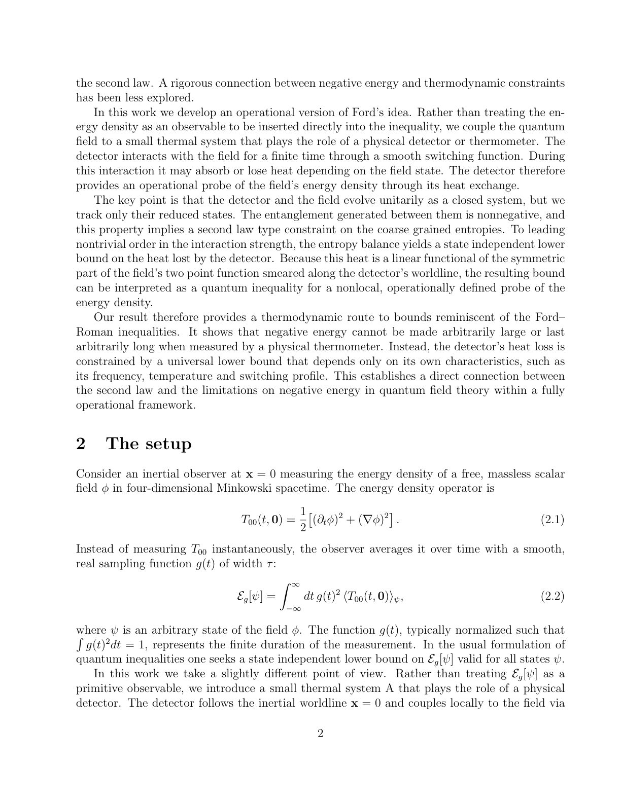
<figcaption class="paper-figure-caption"><b>Fig 1.</b> Low-resolution page preview, page 2</figcaption>
</figure>
<figure class="paper-figure-card">
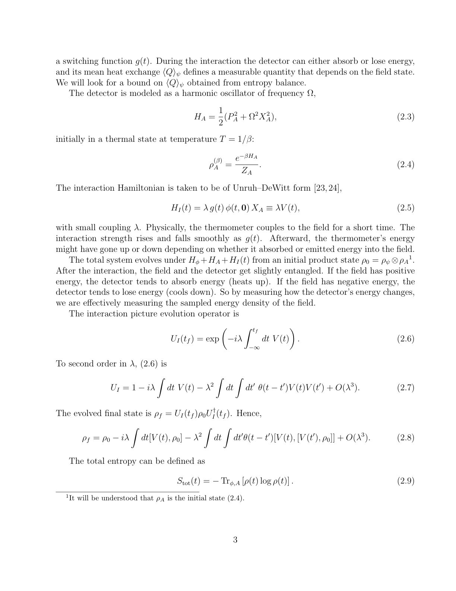
<figcaption class="paper-figure-caption"><b>Fig 2.</b> Low-resolution page preview, page 3</figcaption>
</figure>
<figure class="paper-figure-card">
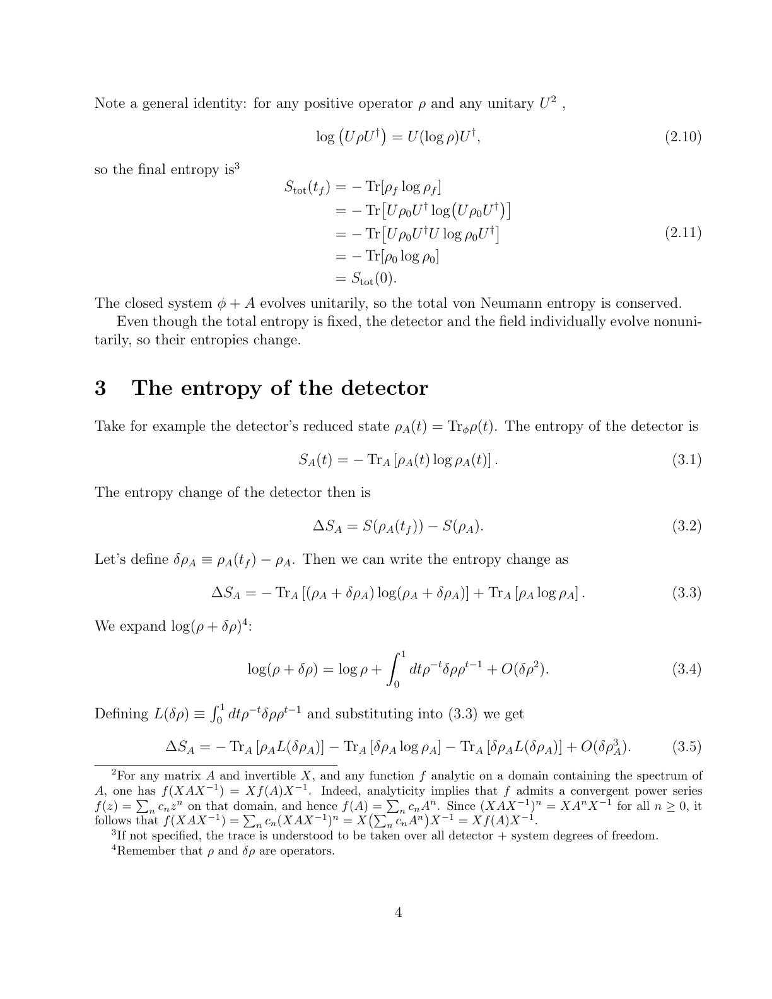
<figcaption class="paper-figure-caption"><b>Fig 3.</b> Low-resolution page preview, page 4</figcaption>
</figure>
<figure class="paper-figure-card">
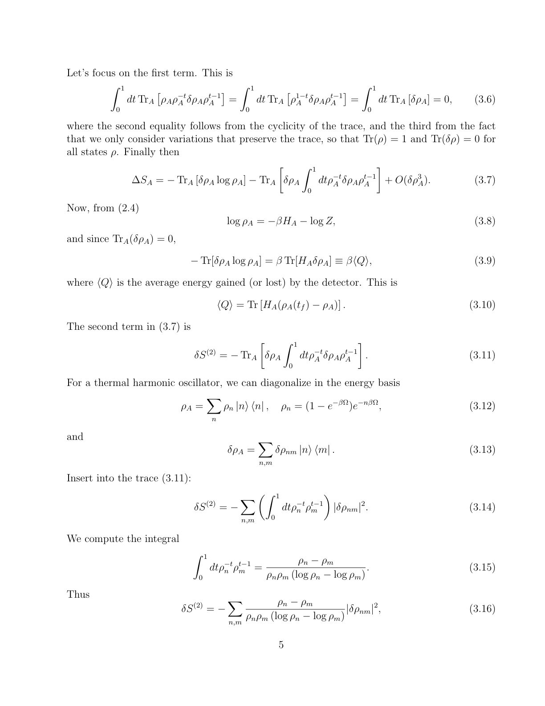
<figcaption class="paper-figure-caption"><b>Fig 4.</b> Low-resolution page preview, page 5</figcaption>
</figure>
<figure class="paper-figure-card">
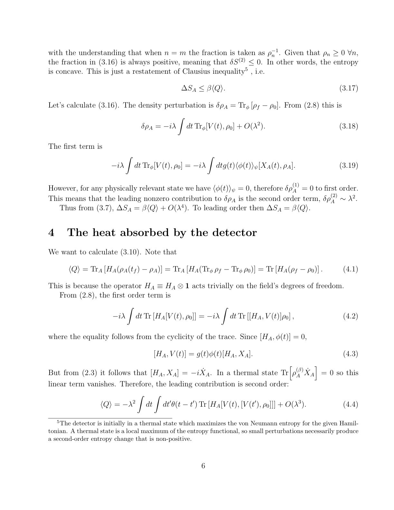
<figcaption class="paper-figure-caption"><b>Fig 5.</b> Low-resolution page preview, page 6</figcaption>
</figure>
</div>

<p><strong>Summary.</strong> This work derives quantum inequalities—which bound how negative the local energy density can be—by applying the second law of thermodynamics. It models this using a thermal detector coupled to a quantum field, showing that entropy conservation dictates a minimum heat loss. This establishes a direct thermodynamic pathway to understanding fundamental energy constraints in quantum field theory.</p>
<p><strong>Why it may be interesting.</strong> It provides a powerful, non-field-theoretic derivation of quantum inequalities by grounding them in fundamental thermodynamic principles (the Second Law), making it relevant for understanding energy constraints in open quantum systems.</p>
<details>
<summary>Detailed structure</summary>
<p><strong>Main problem.</strong> The paper derives quantum inequalities—bounds on negative energy density—by establishing a connection between these bounds and the second law of thermodynamics.</p>
<p><strong>Main result.</strong> It shows that the non-negativity of entropy change (the Second Law) imposes a state-independent lower bound on the heat loss measured by a thermal detector, leading to quantum inequalities for the field's energy density.</p>
<p><strong>Method.</strong> The analysis uses an operational framework involving coupling a quantum field to a small thermal detector and applying entropy balance arguments derived from thermodynamics.</p>
<p><strong>Model / system.</strong> The system consists of a free, massless scalar field coupled via an Unruh-DeWitt interaction Hamiltonian to a harmonic oscillator detector. The dynamics are analyzed using perturbation theory in the coupling strength.</p>
<p><strong>Key observables.</strong> Average heat absorbed by the detector ($\langle Q 
angle_\psi$), change in detector entropy ($\Delta S_A$), and time-averaged energy density ($\langle E_g[\psi] 
angle$).</p>
<p><strong>Important parameters / regimes.</strong> Temperature ($T$) or inverse temperature ($eta=1/T$), coupling strength ($\lambda$), and the characteristic frequency ($\Omega$) of the detector.</p>
<p><strong>Assumptions / limitations.</strong> The analysis is performed to second order in the coupling strength $\lambda$, and it assumes that for physical states, the first-order term in the density matrix change vanishes.</p>
<p><strong>Paper structure.</strong> The paper builds from general principles of entropy conservation ($\Delta S_{tot}=0$) to applying the Second Law constraint ($\Delta S_A \le eta \langle Q 
angle$), which is then used in a perturbative calculation involving correlation functions to derive the energy bounds.</p>
</details>
<details>
<summary>Abstract</summary>
<p>Quantum field theory allows local violations of the classical energy conditions, such as regions of negative energy density. The Ford-Roman quantum inequalities quantify how negative these regions can be and for how long. We present a derivation of these inequalities from the second law of thermodynamics, in an operational framework that couples the field to a small thermal detector. The detector acts as a physical probe of the field's energy density and, by the non-negativity of the entanglement entropy between the two systems, one can show that its heat loss is bounded from below by a state-independent quantity.</p>
</details>
<p><sub><a href="#top">↑ back to top</a></sub></p>

<p><a id="paper-2608.11466"></a></p>
<h3 id="accurate-evaluation-of-nanoscale-spatiotemporal-dynamics-with-electron-correlation-microscopy"><a href="http://arxiv.org/abs/2608.11466v1">Accurate Evaluation of Nanoscale Spatiotemporal Dynamics with Electron Correlation Microscopy</a></h3>
<p><strong>Authors:</strong> Po-Cheng Kung, Ajay Annamareddy, Mark D. Ediger, Dane Morgan, Paul M. Voyles<br>
<strong>Type:</strong> both · <strong>Category:</strong> disordered systems and neural networks · <strong>PDF:</strong> <a href="https://arxiv.org/pdf/2608.11466v1">https://arxiv.org/pdf/2608.11466v1</a><br>
<strong>Analysis basis:</strong> full PDF text, analyzed in chunks
<strong>Topic relevance:</strong> <code>methods for driven-dissipative</code> <strong>3/5</strong> · <code>non-equilibrium universality</code> <strong>2/5</strong> · <code>driven-dissipative phase transition</code> <strong>1/5</strong> · <code>quantum measurements</code> <strong>1/5</strong> · <code>scars &amp; prethermalization</code> <strong>1/5</strong></p>
<div class="figure-strip-hint">↔ Scroll figures horizontally</div>
<div class="paper-figures-scroll">
<figure class="paper-figure-card">
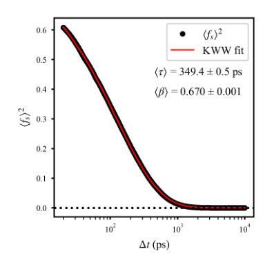
<figcaption class="paper-figure-caption"><b>Fig 1.</b> Figure 1: Time- and spatially averaged squared self-ISF for the CuZr MD trajectory at 760 K,</figcaption>
</figure>
<figure class="paper-figure-card">

<figcaption class="paper-figure-caption"><b>Fig 2.</b> Figure 2 (a) shows the time- and spatially averaged intensity autocorrelation function normalized by</figcaption>
</figure>
<figure class="paper-figure-card">
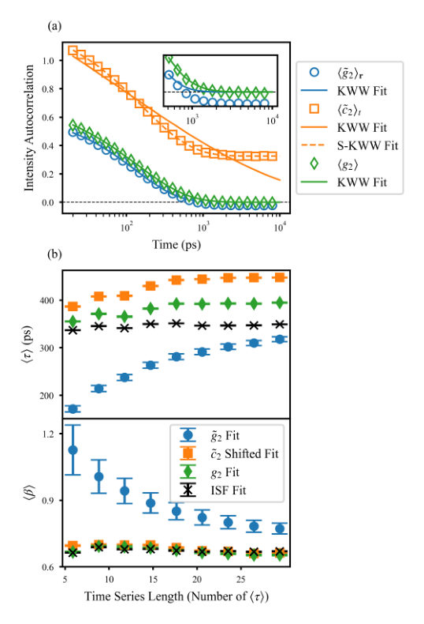
<figcaption class="paper-figure-caption"><b>Fig 3.</b> Figure 2: (a) Time- and spatially averaged intensity autocorrelation functions calculated based on</figcaption>
</figure>
<figure class="paper-figure-card">
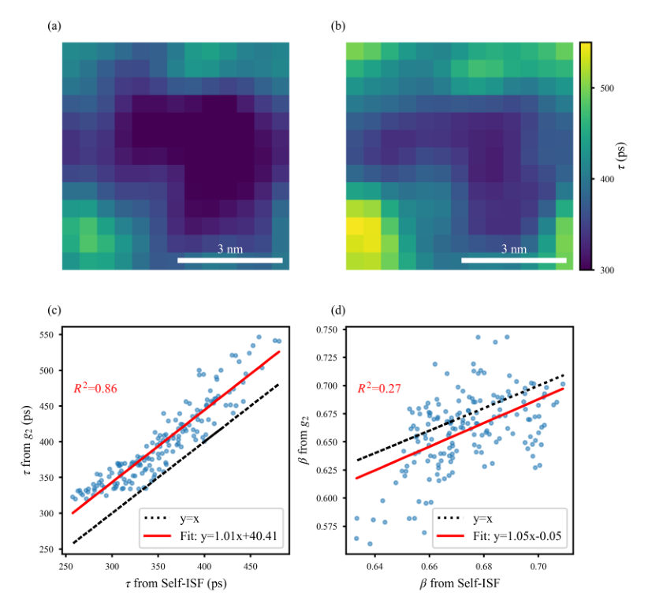
<figcaption class="paper-figure-caption"><b>Fig 4.</b> Figure 3: (a,b) Time-averaged structural relaxation time τ map calculated from the self-ISF and</figcaption>
</figure>
<figure class="paper-figure-card">

<figcaption class="paper-figure-caption"><b>Fig 5.</b> Figure 4 (a) shows the single probe position TTCF from the center of the model SCL, where</figcaption>
</figure>
</div>

<p><strong>Summary.</strong> This paper addresses systematic errors in measuring nanoscale structural dynamics using Electron Correlation Microscopy by proposing a novel, physics-inspired intensity normalization technique. The method corrects for artifacts arising from misapplying X-ray scattering analysis tools (XPCS) to electron diffraction data. By validating this approach against simulations and applying it to experimental samples, the authors establish an artifact-free pathway for characterizing localized structural relaxation in disordered materials.</p>
<p><strong>Why it may be interesting.</strong> This work provides crucial methodological rigor for interpreting complex scattering data from disordered systems (like glasses or amorphous materials), which is highly relevant to understanding structural relaxation dynamics in condensed matter theory and experiment.</p>
<details>
<summary>Detailed structure</summary>
<p><strong>Main problem.</strong> Previous Electron Correlation Microscopy (ECM) methods incorrectly applied X-ray Photon Correlation Spectroscopy (XPCS) normalization frameworks to nanobeam electron diffraction data, leading to systematic errors in measuring nanoscale structural relaxation times.</p>
<p><strong>Main result.</strong> The authors developed a physics-inspired, ECM-specific normalization framework that successfully reproduces known relaxation dynamics using molecular dynamics simulations and correctly identifies stable crystalline phases in experimental nanowire data previously misclassified as relaxing domains.</p>
<p><strong>Method.</strong> They propose an alternative intensity normalization scheme based on time- and azimuthal-averaging of the first diffraction ring intensities, which corrects for artifacts inherent to conventional XPCS analysis in nanoscale electron scattering geometries.</p>
<p><strong>Model / system.</strong> The work uses molecular dynamics simulations of a supercooled liquid (CuZr) as a benchmark, and applies the method to experimental time-resolved 4D STEM datasets of a complex metallic nanowire ($ ext{Pt}<em 14.7>{57.5}  ext{Cu}</em>}  ext{Ni<em 22.5>{5.3}   ext{P}</em>$).</p>
<p><strong>Key observables.</strong> Structural relaxation times and stretching exponents derived from intensity autocorrelation functions, specifically the self-intermediate scattering function ($   ext{self-ISF}$), $  ext{g}_2$, and $    ext{c}_2$.</p>
<p><strong>Important parameters / regimes.</strong> Nanoscale spatial resolution (1 nm probe size); time delays ($\Delta t$); temperature/cooling rate regimes in supercooled liquids.</p>
<p><strong>Assumptions / limitations.</strong> The primary assumption is that the systematic errors arise from inappropriate normalization; the proposed method assumes isotropy and uses specific averaging over diffraction rings to correct for these artifacts.</p>
<p><strong>Figures summary.</strong> Figure 12 compares simulated X-ray and electron scattering normalized intensity profiles, highlighting the difference between standard XPCS ranges and the actual electron speckle diameter sampled by ECM.</p>
<p><strong>Paper structure.</strong> The paper first identifies the systematic failure of XPCS normalization in ECM; it then proposes a new physics-inspired normalization framework; this is validated using MD simulations of supercooled liquids ($  ext{CuZr}$); finally, the method is applied to analyze experimental 4D STEM data on nanowires.</p>
</details>
<details>
<summary>Abstract</summary>
<p>Electron correlation microscopy (ECM) can measure materials dynamics with nanoscale spatial resolution from intensity correlation functions. However, adopting X-ray photon correlation spectroscopy (XPCS) normalization frameworks unchanged when calculating intensity correlations can introduce errors. Due to the constrained sampling volumes and larger speckle sizes in nanobeam electron diffraction, XPCS-style time-averaging and scattering-vector averaging introduce systematic artifacts, such as artificial anticorrelations or elevated baselines that lead to systematic errors in structural relaxation times and stretching exponents. This work presents physics-inspired, ECM-specific intensity normalizations over time- and azimuthal-averaged intensities of the first diffraction ring that limit those errors. The framework is validated using molecular dynamics simulations of a CuZr supercooled liquid to benchmark against the self intermediate scattering function, successfully reproducing relaxation times. When applied to experimental time-resolved 4D STEM datasets of a Pt57.5Cu14.7Ni5.3P22.5 nanowire, the method correctly identifies highly stable, unchanging nanoscale crystalline phases that were erroneously misclassified as relaxing domains by previous frameworks. Other previous ECM research is reevaluated in light of these observation. This robust approach establishes an artifact-free pathway for evaluating localized spatiotemporal relaxation behaviors.</p>
</details>
<p><sub><a href="#top">↑ back to top</a></sub></p>

<p><a id="paper-2608.11700"></a></p>
<h3 id="logarithmically-correlated-landscapes-and-localization-in-non-hermitian-quasicrystals"><a href="http://arxiv.org/abs/2608.11700v1">Logarithmically Correlated Landscapes and Localization in Non-Hermitian Quasicrystals</a></h3>
<p><strong>Authors:</strong> Xianqi Tong, Qifeng Ding, Xiaosen Yang<br>
<strong>Type:</strong> theory · <strong>Category:</strong> disordered systems and neural networks · <strong>PDF:</strong> <a href="https://arxiv.org/pdf/2608.11700v1">https://arxiv.org/pdf/2608.11700v1</a><br>
<strong>Analysis basis:</strong> full PDF text, analyzed in chunks
<strong>Topic relevance:</strong> <code>non-equilibrium universality</code> <strong>3/5</strong> · <code>driven-dissipative phase transition</code> <strong>2/5</strong> · <code>analog quantum simulation</code> <strong>1/5</strong> · <code>correlated / nonlocal dissipation</code> <strong>1/5</strong> · <code>scars &amp; prethermalization</code> <strong>1/5</strong></p>
<div class="figure-strip-hint">↔ Scroll figures horizontally</div>
<div class="paper-figures-scroll">
<figure class="paper-figure-card">
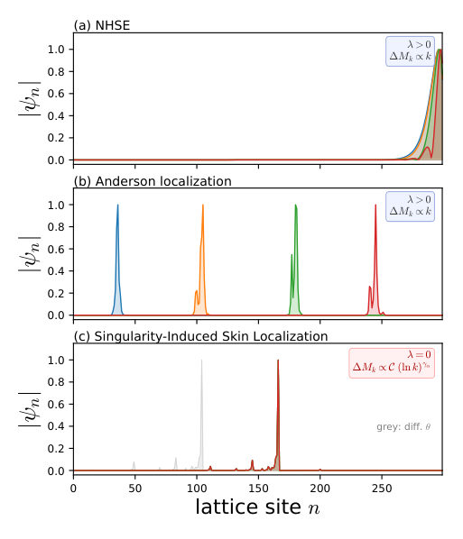
<figcaption class="paper-figure-caption"><b>Fig 1.</b> FIG. 1. Three localization mechanisms in one-dimensional non-Hermitian lattices. (a) Conventional skin effect under open boundaries. (b) Anderson or Aubry-Andr´e localization driven by an on-site potential. (c) This work: a singular quasiperiodic gauge field builds a deterministic log-correlated landscape on a closed ring.</figcaption>
</figure>
<figure class="paper-figure-card">
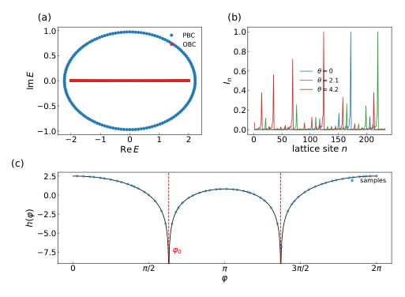
<figcaption class="paper-figure-caption"><b>Fig 2.</b> FIG. 2. Hatano-Nelson ring with quasiperiodic nonreciprocal hopping at t = 1, µ = 2.5, p = 2, and golden-mean frequency. (a) Energy spectrum under PBC, forming a closed loop, and under OBC, collapsing onto the real axis. (b) Eigenstate in- tensities In under PBC for three modulation phases θ; all share the same envelope. (c) Gauge field h(φ) showing log- arithmic singularities at the zeros of t + µ cos φ. Dots mark the quasiperiodic orbit samples.</figcaption>
</figure>
<figure class="paper-figure-card">
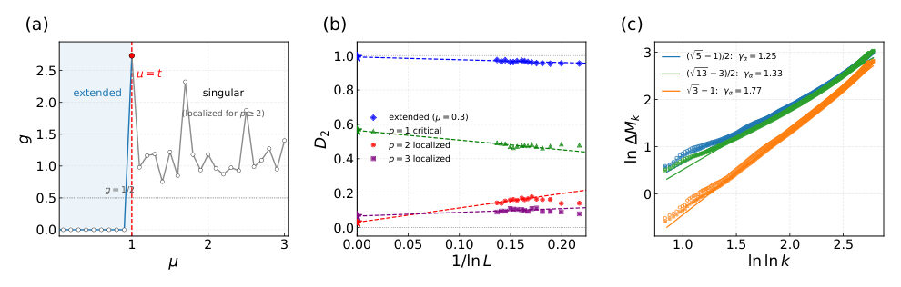
<figcaption class="paper-figure-caption"><b>Fig 3.</b> FIG. 3. Landscape statistics at t = 1, µ = 2.5 unless labeled, and golden-mean frequency. (a) Stiffness g versus µ at L = 2584, averaged over 160 phases. The extended phase with g = 0 ends at µ = t; inside the singular regime, a localization threshold at g = 1/2 separates critical states at p = 1 from localized states at p ≥2. (b) Fractal dimension D2 versus 1/ ln L for several (µ, p) combinations. Stars mark the L →∞extrapolations. (c) Gap statistics ∆Mk on doubly logarithmic axes for three frequencies at L = 108–2 × 108, averaged over 48 phases.</figcaption>
</figure>
<figure class="paper-figure-card">
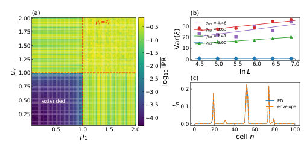
<figcaption class="paper-figure-caption"><b>Fig 4.</b> FIG. 4. Non-Hermitian SSH chain with t1 = t2 = 1, p = 2, and golden-mean frequency. (a) Phase diagram in the (µ1, µ2) plane. Color encodes the disorder-averaged IPR and dashed lines mark the predicted boundaries. (b) Landscape variance Var(ξ) versus ln L for four representative parameter combi- nations with different total stiffness gtot. (c) Cell-resolved in- tensity In compared with the analytic two-channel envelope.</figcaption>
</figure>
<figure class="paper-figure-card">
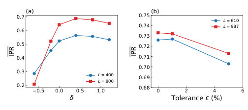
<figcaption class="paper-figure-caption"><b>Fig 5.</b> FIG. 5. Robustness of the localization mechanism at t = 1, µ = 2.5, p = 2, and golden-mean frequency. (a) Disorder- averaged IPR versus asymmetry parameter δ at two system sizes, averaged over 8 phases and 10 midspectrum states. (b) Disorder-averaged IPR versus component tolerance ϵ, av- eraged over 8 phases and 4 noise realizations.</figcaption>
</figure>
</div>

<p><strong>Summary.</strong> This paper analyzes wave function localization in non-Hermitian quasicrystals where hopping amplitudes modulate through zero. By mapping the system onto a logarithmically correlated potential landscape, the authors derive a critical stiffness threshold that dictates whether the state localizes or remains multifractal. The resulting signatures—including unique gap scaling laws—provide a powerful diagnostic tool for understanding complex quantum transport in engineered non-Hermitian systems.</p>
<p><strong>Why it may be interesting.</strong> This work provides a detailed theoretical framework for understanding how non-Hermiticity, combined with quasiperiodicity, generates novel forms of spectral localization that are mathematically distinct from standard models. The connection to robust physical circuits (topolectrical) is highly relevant for AMO/Quantum Optics applications.</p>
<details>
<summary>Detailed structure</summary>
<p><strong>Main problem.</strong> The study investigates localization phenomena in non-Hermitian quantum systems subjected to quasiperiodically modulated hopping that passes through zero (a singular regime). The goal is to characterize the resulting wave function behavior based on system parameters.</p>
<p><strong>Main result.</strong> Localization occurs only when a derived 'stiffness' factor exceeds a critical threshold, leading to distinct signatures like super-logarithmic gap scaling in extreme-value statistics. This mechanism is robust and differs from standard Anderson or Aubry-André universality classes.</p>
<p><strong>Method.</strong> The authors use gauge transformations to map the non-Hermitian system onto an effective potential landscape whose variance grows logarithmically with system size, allowing for rigorous mathematical analysis of localization criteria.</p>
<p><strong>Model / system.</strong> The model is a one-dimensional Hatano-Nelson ring with quasiperiodically modulated nonreciprocal hopping. The Hamiltonian involves terms like $t \pm \mu \cos(2\pi \alpha n + 	heta)$, placing it in the realm of non-Hermitian quasicrystals.</p>
<p><strong>Key observables.</strong> Landscape Variance ($  ext{Var}(\xi) \propto \ln L$), Stiffness ($g$), Inverse Participation Ratio (IPR), and the scaling exponent ($\gamma_\alpha$) governing peak gaps.</p>
<p><strong>Important parameters / regimes.</strong> Modulation depth ($\mu$), mean hopping ($t$), quasiperiodic frequency ($\alpha$), and the stiffness factor $g$.</p>
<p><strong>Assumptions / limitations.</strong> The analysis relies on mapping the non-Hermiticity into a gauge field whose fluctuations determine localization, assuming the dominant contribution to eigenstate modulus comes from this singular factor.</p>
<p><strong>Figures summary.</strong> Figures compare localization mechanisms (NHSE vs. Anderson), show energy spectra and intensity profiles under periodic/open boundary conditions, and illustrate the phase diagram showing variance scaling versus system size.</p>
<p><strong>Paper structure.</strong> The paper establishes the model via a gauge transformation, derives the logarithmic growth of landscape variance in the singular regime ($|\mu| > |t|$), defines the localization criterion based on stiffness $g$, and finally characterizes this mechanism using unique super-logarithmic gap statistics.</p>
</details>
<details>
<summary>Abstract</summary>
<p>We study a one-dimensional Hatano-Nelson ring whose nonreciprocal hopping is quasiperiodically modulated through zero. A gauge transformation maps every eigenstate onto a single spatial envelope, whose logarithm becomes a deterministic, logarithmically correlated field once the hopping vanishes along the quasiperiodic orbit. We derive an exact Fourier representation and prove that the landscape variance grows logarithmically with system size, with a stiffness set by the modulation power and the arithmetic of the incommensurate frequency. The extended phase terminates at an algebraic boundary given by Jensen's formula. Inside the singular regime, localization requires the stiffness to exceed a critical threshold: above it, the wavefunction weight concentrates on the few highest landscape peaks and the state is localized; below it, the weight spreads over too many competing peaks and the state is a critical multifractal. The extreme-value statistics are anomalous: peak gaps grow as a power of the logarithm of rank, with an exponent that encodes the continued-fraction type of the frequency, distinct from the Anderson, Aubry-André, and random-gauge universality classes. The stiffness adds across channels in multiband lattices, and all signatures survive percent-level component disorder, placing the mechanism within reach of nonreciprocal topolectrical circuits.</p>
</details>
<p><sub><a href="#top">↑ back to top</a></sub></p>

<p><a id="paper-2608.11721"></a></p>
<h3 id="scalar-finite-proper-time-field-theory-as-spectral-operator-calculus"><a href="http://arxiv.org/abs/2608.11721v1">Scalar Finite-Proper-Time Field Theory as Spectral Operator Calculus</a></h3>
<p><strong>Authors:</strong> Mustafa Bakr, Tongyu Zhang<br>
<strong>Type:</strong> theory · <strong>Category:</strong> other · <strong>PDF:</strong> <a href="https://arxiv.org/pdf/2608.11721v1">https://arxiv.org/pdf/2608.11721v1</a><br>
<strong>Analysis basis:</strong> full PDF text, analyzed in chunks
<strong>Topic relevance:</strong> <code>Keldysh / 2PI / non-Gaussian methods</code> <strong>3/5</strong> · <code>quantum measurements</code> <strong>2/5</strong> · <code>methods for driven-dissipative</code> <strong>1/5</strong></p>
<div class="figure-strip-hint">↔ Scroll figures horizontally</div>
<div class="paper-figures-scroll">
<figure class="paper-figure-card">
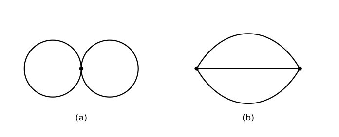
<figcaption class="paper-figure-caption"><b>Fig 1.</b> Figure 1: The two two-loop one-particle-irreducible topologies generated by the background-field cumulant expansion: (a) the figure-eight from one quartic fluctuation vertex and (b) the sunset from two cubic fluctuation vertices.</figcaption>
</figure>
<figure class="paper-figure-card">
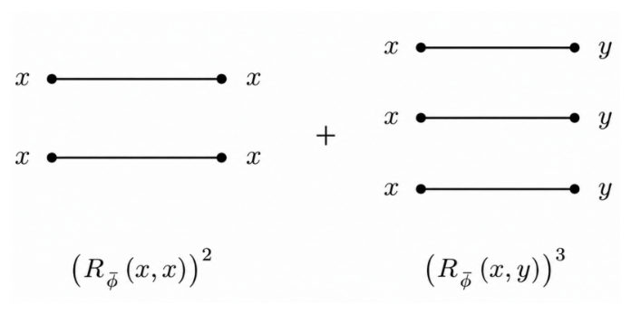
<figcaption class="paper-figure-caption"><b>Fig 2.</b> Figure 2: Schematic of the Schwinger parameter worldlines which form the two-loop effective action. The left diagram refers to the first term in Eq. (94), and the right diagram refers to the second. Each line has minimum length s0. Each derivative acting on exponential factors in the Duhamel chain inserts an insertion which partitions a line (see Fig. 3), and subsequent derivatives acting on insertions modify their structure. They can be used to construct insertion-distribution diagrams, as explained in Section 15.2.</figcaption>
</figure>
<figure class="paper-figure-card">
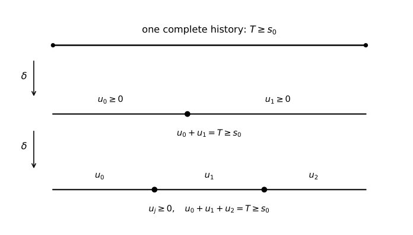
<figcaption class="paper-figure-caption"><b>Fig 3.</b> Figure 3: Duhamel ancestry of one complete open history. A functional derivative inserts an operator and partitions the same total proper time T into non-negative segments. Repeated differentiation produces further segments, but the only lower-endpoint condition is on their sum, P j uj = T ≥s0.</figcaption>
</figure>
<figure class="paper-figure-card">
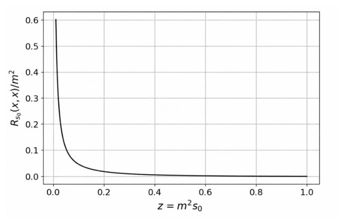
<figcaption class="paper-figure-caption"><b>Fig 4.</b> Figure 4: Dimensionless coincident finite-endpoint covariance in four dimensions, Rs0(x, x)/m2 = [e−z/z −E1(z)] /(16π2) with z = m2s0 = m2/Λ2. The quantity is finite for every fixed s0 &gt; 0 and diverges as Rs0(x, x)/m2 ∼1/(16π2z) only in the limit s0 →0+ when the endpoint is removed.</figcaption>
</figure>
<figure class="paper-figure-card">
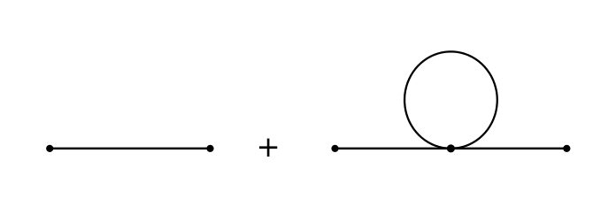
<figcaption class="paper-figure-caption"><b>Fig 5.</b> Figure 5: Schematic one-loop one-particle-irreducible two-point kernel: the tree inverse kernel plus the scalar tadpole self-energy.</figcaption>
</figure>
</div>

<p><strong>Summary.</strong> This work develops a Finite-Proper-Time Field Theory framework for $\lambda\phi^4$ theory, treating a finite endpoint scale $s_0$ as a physical parameter. By calculating loop corrections to scattering amplitudes, the authors prove that this retained scale introduces non-redundant physics that cannot be removed by standard renormalization procedures or local field redefinitions.</p>
<p><strong>Why it may be interesting.</strong> While the model is simple ($\lambda\phi^4$), the methodology of distinguishing between physical scales ($s_0$) and arbitrary regulators provides a powerful theoretical tool for understanding how scale dependence enters quantum field theories beyond traditional RG flow descriptions.</p>
<details>
<summary>Detailed structure</summary>
<p><strong>Main problem.</strong> To formulate a finite-proper-time construction for Euclidean scalar $\lambda\phi^4$ theory and rigorously determine if the dependence on the retained endpoint scale ($s_0$) survives standard renormalization procedures.</p>
<p><strong>Main result.</strong> The analysis establishes that the retained finite proper-time scale $s_0$ introduces perturbative non-redundancy in scattering amplitudes, meaning it cannot be absorbed by local field redefinitions or parameter matching at one loop and beyond.</p>
<p><strong>Method.</strong> The authors use functional methods involving paired open/closed spectral functions and a complete-history diagrammatic calculus to calculate effective actions and scattering amplitudes up to two loops.</p>
<p><strong>Model / system.</strong> The theory analyzed is the Euclidean scalar $\lambda\phi^4$ model. The core novelty lies in defining the theory via a 'retained finite proper-time' scale ($s_0$), which differs fundamentally from standard UV cutoffs ($\Lambda_{UV}$) or renormalization group scales ($\mu$).</p>
<p><strong>Key observables.</strong> The one-loop four-point scattering amplitude, specifically its on-shell dependence and the correlation between coefficients in the low-energy effective action.</p>
<p><strong>Important parameters / regimes.</strong> The retained finite proper-time scale $s_0$, which is treated as a physical parameter distinct from regulators or renormalization scales.</p>
<p><strong>Assumptions / limitations.</strong> The analysis is restricted to fixed-order Euclidean calculations, and the authors explicitly state that this does not imply nonperturbative Lorentzian completion or solve all open questions regarding field redefinition equivalence.</p>
<p><strong>Figures summary.</strong> Figure 11 illustrates the angular dependence of the leading non-constant finite-endpoint correction to massless $2 	o 2$ scalar scattering, showing a specific predicted shape ($3 + \cos^2	heta$).</p>
<p><strong>Paper structure.</strong> The paper builds by first introducing the FPT formalism using spectral functions and deriving diagrammatic rules. It then calculates loop corrections (one-loop four-point function) to demonstrate that $s_0$ dependence is non-redundant, culminating in theorems proving this non-equivalence to standard local renormalization schemes.</p>
</details>
<details>
<summary>Abstract</summary>
<p>We formulate a finite-proper-time construction for Euclidean scalar $λφ^4$ theory in which a retained endpoint $s_0$ is assigned to complete internal histories rather than independently to individual Schwinger segments. The theory is defined through paired open and closed spectral functions and their Fréchet/Duhamel hierarchy. Functional differentiation inserts operators along an existing proper-time history and partitions its total length, while interaction vertices sew separately complete histories. We introduce a corresponding complete-history diagrammatic calculus and derive the resulting one- and two-loop structures. We distinguish the retained endpoint from an auxiliary regulator or renormalisation-group scale and test whether its effects survive ordinary parameter matching and admissible field redefinitions. For the one-loop four-point function, fixing the renormalised mass, field normalisation, and quartic coupling leaves a finite momentum-dependent remainder. We establish a perturbative non-redundancy description of the retained endpoint against finite renormalisable-parameter redefinitions and local $S$-matrix-preserving field redefinitions at this order. The low-energy theory can be represented as an effective field theory, but its higher-derivative coefficients are not independent. This provides a concrete distinction between a retained finite proper-time scale and an arbitrary cutoff prescription.</p>
</details>
<p><sub><a href="#top">↑ back to top</a></sub></p>

<p><a id="paper-2608.11305"></a></p>
<h3 id="thermodynamic-spectroscopy-of-emergent-excitations-in-quantum-spin-ice"><a href="http://arxiv.org/abs/2608.11305v1">Thermodynamic Spectroscopy of Emergent Excitations in Quantum Spin Ice</a></h3>
<p><strong>Authors:</strong> Zhengbang Zhou, Tony An, Yong Baek Kim<br>
<strong>Type:</strong> theory · <strong>Category:</strong> strongly correlated electrons · <strong>PDF:</strong> <a href="https://arxiv.org/pdf/2608.11305v1">https://arxiv.org/pdf/2608.11305v1</a><br>
<strong>Analysis basis:</strong> full PDF text, analyzed in chunks
<strong>Topic relevance:</strong> <code>analog quantum simulation</code> <strong>3/5</strong> · <code>Keldysh / 2PI / non-Gaussian methods</code> <strong>1/5</strong> · <code>quantum measurements</code> <strong>1/5</strong></p>
<div class="figure-strip-hint">↔ Scroll figures horizontally</div>
<div class="paper-figures-scroll">
<figure class="paper-figure-card">
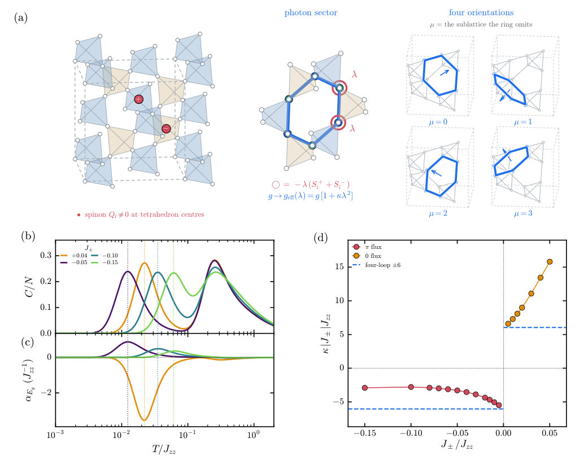
<figcaption class="paper-figure-caption"><b>Fig 1.</b> FIG. 1. Anisotropic thermal expansion as ring-exchange spectroscopy in non-Kramers QSI. (a) Left: Pyrochlore lattice. One spin flip making a spinon pair (Qt ̸= 0, at tetrahedron centres). Centre: a weak transverse field renormalizes the ring exchange whose virtual process is hosted on a hexagonal ring [Eq. (5)]. Right: the 16-site cubic cell holds one ring of each orientation, shown separately in a common view; µ is the sublattice the ring omits, fixing its normal along ˆnµ. (b,c) ED on the 16-site cubic pyrochlore cluster with periodic boundary conditions at x = λ2/(|J±|Jzz) = 0.014: the Eg response (c) tracks the lower anomaly of C (b), dotted lines, and its sign follows the flux sector,...</figcaption>
</figure>
<figure class="paper-figure-card">
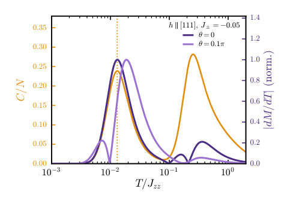
<figcaption class="paper-figure-caption"><b>Fig 2.</b> FIG. 2. The mixing angle sets where the magne- tocaloric response sits. ED on the 16-site cubic cluster at J± = −0.05 with a [111] field [Eq. (12)] with field strength h2 = 0.014|J±|Jzz. For the purely transverse coupling θ = 0 the extremum of |dM/dT| (blue) sits on the lower peak of C (black, dotted line); for θ ̸= 0 (θ = 0.1π, orange) the field lifts the ice degeneracy at first order and the response moves onto the field-set scale on which the ice manifold reorganizes, a factor 12 above the hexagon scale g although only a factor 1.4 above this cluster’s own g4. Both |dM/dT| curves are nor- malized to their maxima.</figcaption>
</figure>
<figure class="paper-figure-card">
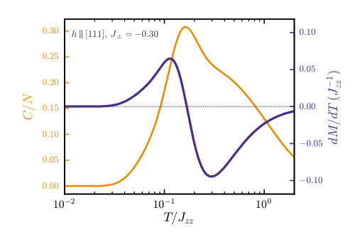
<figcaption class="paper-figure-caption"><b>Fig 3.</b> FIG. 3. Specific heat and dM/dT at J± = −0.30 with field strength h2 = 0.014|J±|Jzz and θ = 0 Here, the two energy scales are close enough that C (black) has a single merged maximum. The signed dM/dT (blue) can still resolve the two energy scales: positive at the ring-exchange scale and negative at T ∼Jzz.</figcaption>
</figure>
</div>

<p><strong>Summary.</strong> The paper introduces advanced thermodynamic spectroscopy techniques to overcome experimental difficulties in measuring the ring-exchange energy scale in Quantum Spin Ice. By analyzing how observables like thermal expansion and magnetization change with weak external fields, the authors propose clean diagnostic signatures that can distinguish between different magnetic flux states within QSI materials.</p>
<p><strong>Why it may be interesting.</strong> This work provides a detailed, quantitative roadmap for interpreting complex thermodynamic measurements in frustrated quantum magnets, linking microscopic Hamiltonian parameters ($g$) directly to macroscopic, measurable responses ($\Delta \alpha$, $dM/dT$).</p>
<details>
<summary>Detailed structure</summary>
<p><strong>Main problem.</strong> The primary challenge is developing a reliable thermodynamic probe to detect the elusive ring-exchange energy scale in Quantum Spin Ice (QSI).</p>
<p><strong>Main result.</strong> Novel probes, such as anisotropic thermal expansion ($\Delta \alpha$) for non-Kramers QSI and $dM/dT$ for dipolar-octupolar pyrochlores, are shown to be highly sensitive to this ring-exchange scale.</p>
<p><strong>Method.</strong> The authors use a novel thermodynamic approach involving coupling the system to weak perturbations (strain or magnetic fields) and analyzing the resulting temperature derivatives of observables ($\gamma_X$).</p>
<p><strong>Model / system.</strong> The study focuses on Quantum Spin Ice, modeled by the XXZ Hamiltonian on the pyrochlore lattice. The analysis distinguishes between non-Kramers and dipolar-octupolar variants to propose distinct experimental signatures.</p>
<p><strong>Key observables.</strong> Difference in thermal expansion coefficients ($\Delta \alpha$), temperature derivative of magnetization ($dM/dT$), and the generalized response function $\gamma_X$.</p>
<p><strong>Important parameters / regimes.</strong> Ring-exchange energy scale ($g$), zero-flux vs. $\pi$-flux state, weak perturbation strength ($\lambda$).</p>
<p><strong>Assumptions / limitations.</strong> The analysis relies on perturbative expansions in the coupling constant ($\lambda$) and assumes that specific probes (like $\Delta \alpha$) are immune to direct nuclear Schottky anomalies.</p>
<p><strong>Figures summary.</strong> Figures illustrate anisotropic thermal expansion spectroscopy showing how the measured signal tracks the lower energy anomaly of the specific heat, and diagrams show the microscopic dependence on flux sector for $dM/dT$.</p>
<p><strong>Paper structure.</strong> The paper establishes the theoretical framework using perturbation theory to derive $\gamma_X$ from weak coupling. It then applies this formalism to two distinct experimental platforms (NK and DO pyrochlores) to predict measurable signatures distinguishing different QSI ground states.</p>
</details>
<details>
<summary>Abstract</summary>
<p>Quantum spin ice (QSI) is a three-dimensional quantum spin liquid where fractionalized spinons interact with emergent photons. The XXZ model on the pyrochlore lattice realizes such a $U(1)$ quantum spin liquid and a number of pyrochlore magnets have been investigated as candidate materials, but the detection of emergent excitations has been a major challenge. The specific heat is expected to show the higher-energy spinon excitations and a lower-energy anomaly at the ring-exchange scale, which sets both the photon bandwidth and the energy of the emergent magnetic monopoles (or visons). In reality, the lower-energy peak is obscured by the nuclear Schottky anomaly in non-Kramers Pr-based systems, while it is not clearly resolved from the spinon contributions in Ce-based dipolar-octupolar systems. In this work, we propose a novel thermodynamic probe of the elusive ring-exchange energy scale. We show that in the presence of a weak perturbation coupled to the transverse component of the pseudospin degrees of freedom, the temperature derivative of an observable conjugate to such a weak perturbing force is highly sensitive to the ring-exchange energy scale. Using this scheme, it is shown that the difference between thermal expansion coefficients along the [100] and [010] directions should show a peak at the ring-exchange energy scale for non-Kramers QSI. Similarly, the temperature derivative of the magnetization, $dM/dT$, of dipolar-octupolar pyrochlores under a weak magnetic field can also detect the same signal. Moreover, the sign of these signatures distinguishes the zero-flux and $π$-flux QSI states.</p>
</details>
<p><sub><a href="#top">↑ back to top</a></sub></p>

<p><a id="paper-2608.12255"></a></p>
<h3 id="conditional-dependence-and-scrooge-ensembles-in-shallow-random-quantum-circuits"><a href="http://arxiv.org/abs/2608.12255v1">Conditional dependence and Scrooge ensembles in shallow random quantum circuits</a></h3>
<p><strong>Authors:</strong> Yinchen Liu, Max McGinley, Thomas Schuster, David Gosset<br>
<strong>Type:</strong> theory · <strong>Category:</strong> statistical mechanics · <strong>PDF:</strong> <a href="https://arxiv.org/pdf/2608.12255v1">https://arxiv.org/pdf/2608.12255v1</a><br>
<strong>Analysis basis:</strong> full PDF text, analyzed in chunks
<strong>Topic relevance:</strong> <code>quantum measurements</code> <strong>3/5</strong> · <code>correlated / nonlocal dissipation</code> <strong>1/5</strong></p>
<div class="figure-strip-hint">↔ Scroll figures horizontally</div>
<div class="paper-figures-scroll">
<figure class="paper-figure-card">
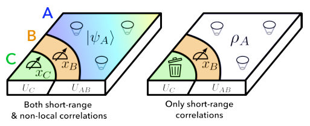
<figcaption class="paper-figure-caption"><b>Fig 1.</b> FIG. 1. Illustration of the Scrooge hypothesis for constant- depth random quantum circuits. Here |ψA⟩is the post- measurement state with outcomes xB, xC; while ρA is ob- tained by measuring xB and tracing out C. We find that moments of |ψA⟩match those of the Scrooge ensemble de- fined by ρA. When measured in any fixed basis, ρA features only short-range correlations (black light-cones), while |ψA⟩ may have non-local correlations (rainbow gradient).</figcaption>
</figure>
<figure class="paper-figure-card">
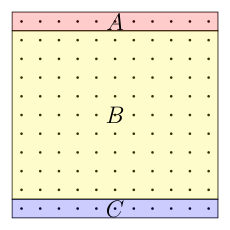
<figcaption class="paper-figure-caption"><b>Fig 2.</b> FIG. 2. (a) Tripartition ABC of the 2D grid. (b) Numerical estimation of the distribution of the integer r = I(A; C|B) for depth-5 and depth-7 2D random Clifford circuits acting on a 100×100 grid of qubits using 105 random circuit realizations.</figcaption>
</figure>
<figure class="paper-figure-card">
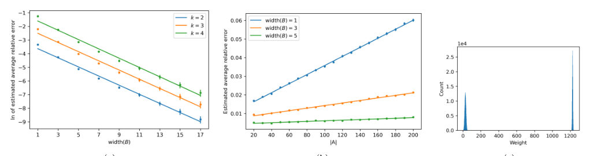
<figcaption class="paper-figure-caption"><b>Fig 3.</b> FIG. 3. (a,b) Average relative error between the k-th diagonal frame potential (DFP) of EA(UAB, xB) and Dρ as a function of (a) width(B) = dist(A, C) −1, and (b) |∂A|. Here, A is the top row of qubits, C is the bottom 6 rows of qubits, and B is all other qubits; averaging is over instances of the background state ρA(UAB, xB). In (a), we fix |A| = 100; in (b), we fix k = 2. Error bars show twice the standard error. (c) Weight distribution of the Z-type stabilizers of a depth-7 2D random Clifford circuit acting on a 50 × 50 grid of qubits. This example shows a bimodal histogram over a total of 219 −1 non-identity Z-type stabilizers, with a low-weight peak of 218 −1 elements centered at 28 and...</figcaption>
</figure>
<figure class="paper-figure-card">
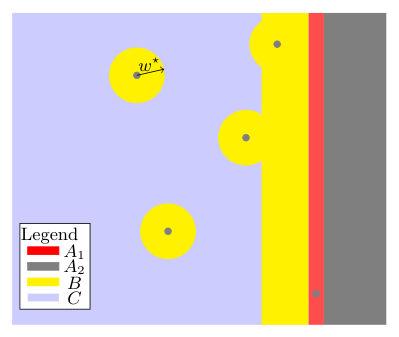
<figcaption class="paper-figure-caption"><b>Fig 4.</b> FIG. 4. The sets A1(j), A2(j), B(j), C(j) used in step j of Algorithm 1 (see line 6 of (a)) are depicted in (b) and described in the text. We show that for a given ϵ = 1/poly(n) it is possible to choose constants c1, c2 = O(1) such that Algorithm 1 samples from a distribution with expected total variation distance at most ϵ/2 from pT (cf. Eq. (9)).</figcaption>
</figure>
<figure class="paper-figure-card">
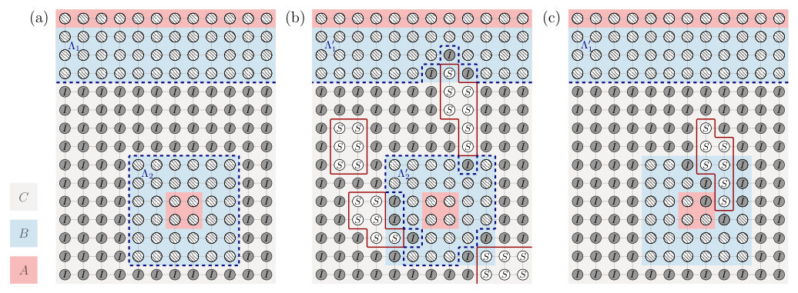
<figcaption class="paper-figure-caption"><b>Fig 5.</b> FIG. 5. Spin configurations contributing to the conditional probabilities and expectations arising in the expression (B44), for a particular choice of tripartition A (red), B (blue), and C (light grey). (a): Conditioning on πC = I means all spins in C are frozen to the state I (grey circles). These frozen spins define effective boundary conditions for Ising models on each connected component Λi ⊂AB (boundaries of which are shown with blue dashed lines). Within each component, spins are free to fluctuate (black and white striped circles). (b): After conditioning on the event ⃗πC ∈GI, a typical configuration has most spins in the state I, but with some small minority islands in the state S...</figcaption>
</figure>
</div>

<p><strong>Summary.</strong> This work analyzes how measuring subsets of qubits in shallow random quantum circuits induces long-range entanglement, leading to conditional dependencies. The authors conjecture that these post-measurement states follow a 'Scrooge ensemble,' which mathematically implies that the complex quantum dynamics are efficiently simulable classically, even when noise is present.</p>
<p><strong>Why it may be interesting.</strong> It provides a concrete mechanism by which local quantum dynamics can generate non-local correlations that are nevertheless efficiently simulated classically due to underlying structural constraints revealed by measurement theory.</p>
<details>
<summary>Detailed structure</summary>
<p><strong>Main problem.</strong> The paper investigates the structure of conditional dependence induced by measurements on qubits within shallow random quantum circuits (SRQCs) and how this relates to classical simulation complexity.</p>
<p><strong>Main result.</strong> For sufficiently deep SRQCs, the post-measurement state ensemble is conjectured to be approximated by a 'Scrooge ensemble,' leading to the conclusion that these circuits are classically efficiently simulable even with small depolarizing noise.</p>
<p><strong>Method.</strong> The analysis uses theoretical conjectures (the Scrooge hypothesis) and rigorous mathematical tools like analyzing moment matching via Diagonal Frame Potentials (DFP) to bound the relative error between the actual post-measurement ensemble and the predicted Haar/Scrooge measure.</p>
<p><strong>Model / system.</strong> The model is an n-qubit two-dimensional lattice subjected to shallow random quantum circuits (SRQCs) with nearest-neighbor gates, partitioned into three regions A, B, and C for measurement analysis.</p>
<p><strong>Key observables.</strong> Conditional Mutual Information $I(A; C|B)$, the relative error between moment expectations of the actual ensemble vs. the Scrooge ensemble ($\epsilon$), and the Diagonal Frame Potential (DFP).</p>
<p><strong>Important parameters / regimes.</strong> Circuit depth ($d > d^* = \Theta(1)$), system size ($n$), and the width parameter $   ext{width}(B) =     ext{dist}(A, C) - 1$.</p>
<p><strong>Assumptions / limitations.</strong> The core conjecture is that the post-measurement ensemble approximates the Scrooge ensemble; further analysis relies on assuming stabilizer state structures for bounding errors.</p>
<p><strong>Figures summary.</strong> Figures illustrate numerical evidence showing non-zero conditional mutual information at sufficient depth, and plots demonstrate that the average relative error decays inverse exponentially with the separation width between measured regions.</p>
<p><strong>Paper structure.</strong> The paper progresses from establishing the physical phenomenon of measurement-induced long-range entanglement to formulating the Scrooge ensemble conjecture. It then develops rigorous mathematical machinery using moment matching (DFP) to prove the convergence of observables towards this idealized, classically simulable limit.</p>
</details>
<details>
<summary>Abstract</summary>
<p>The output state of a 2D geometrically local shallow random quantum circuit does not have long range correlations due to its lightcone structure. But this changes if one measures a subset of the qubits: long-range entanglement can be induced by the measurement process, leading to conditional correlations between distant qubits. In this paper we investigate the structure of conditional dependence in these circuits and its consequences for quantum advantage. For a tripartition $ABC$ of the qubits, we consider the ensemble of post-measurement states on $A$ that is conditioned on a specific measurement outcome on $B$ and ranges over all possible measurement outcomes on $C$. For circuit depths exceeding a constant critical value $d^*$, we conjecture that this ensemble is well approximated by a certain generalization of the Haar ensemble, called the Scrooge ensemble~[Jozsa \textit{et al.}, \href{https://doi.org/10.1103/PhysRevA.49.668}{Phys. Rev. A \textbf{49}, 668 (1994)}]; we also provide supporting numerical and analytical evidence. Our conjecture describes a precise sense in which the state retains its lightcone structure on the remaining unmeasured qubits, but also develops some globally random features arising from the measurement. A consequence is that $n$-qubit shallow random quantum circuits in two dimensions are classically efficiently simulable in the presence of a tiny depolarizing noise rate $Ω(\log(n)/n)$.</p>
</details>
<p><sub><a href="#top">↑ back to top</a></sub></p>

<p><a id="paper-2608.12014"></a></p>
<h3 id="the-ambipolar-electric-field-in-multispecies-plasma-atmospheres-effects-of-alpha-particles-and-stochastic-heating"><a href="http://arxiv.org/abs/2608.12014v1">The Ambipolar electric field in multispecies plasma atmospheres: effects of alpha particles and stochastic heating</a></h3>
<p><strong>Authors:</strong> Luca Barbieri, Pascal Démoulin, Daniel Verscharen<br>
<strong>Type:</strong> theory · <strong>Category:</strong> statistical mechanics · <strong>PDF:</strong> <a href="https://arxiv.org/pdf/2608.12014v1">https://arxiv.org/pdf/2608.12014v1</a><br>
<strong>Analysis basis:</strong> full PDF text, analyzed in chunks
<strong>Topic relevance:</strong> <code>Keldysh / 2PI / non-Gaussian methods</code> <strong>3/5</strong> · <code>quantum measurements</code> <strong>1/5</strong></p>
<div class="figure-strip-hint">↔ Scroll figures horizontally</div>
<div class="paper-figures-scroll">
<figure class="paper-figure-card">
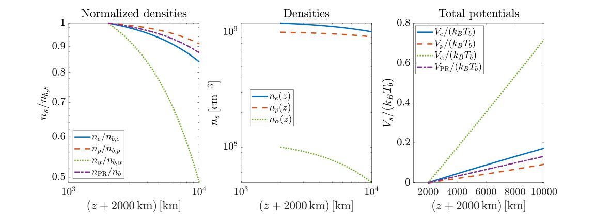
<figcaption class="paper-figure-caption"><b>Fig 1.</b> Figure 1. Density and total potential profiles for a three-component plasma composed of electrons, protons, and α-particles. Left panel: normalized density profiles of electrons, protons, and α particles together with the classical Pannekoek–Rosseland solution as functions of height. The density profiles are computed from Equation (8) using the self-consistent electrostatic potential obtained by numerically solving Equation (12), whereas the Pannekoek–Rosseland reference profile is computed from Equation (13). Middle panel: corresponding density profiles. Right panel: total potential energies, computed from Equation (4) and normalized to kBTb, as functions of height. The calculations are...</figcaption>
</figure>
<figure class="paper-figure-card">
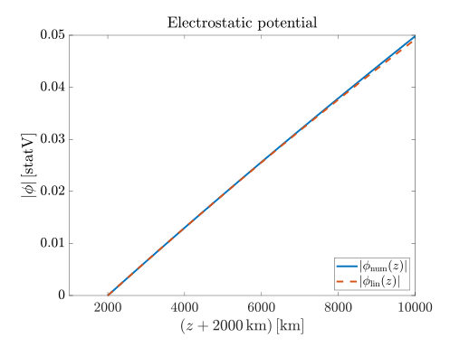
<figcaption class="paper-figure-caption"><b>Fig 2.</b> Figure 2. Comparison between the numerical solution of the nonlinear self-consistent electrostatic potential obtained from Equation (12) and the first-order analytical approximation given by Equation (42). The calculations were performed using the same physical parameters as in Figure 1.</figcaption>
</figure>
<figure class="paper-figure-card">
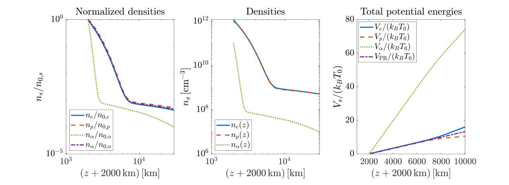
<figcaption class="paper-figure-caption"><b>Fig 3.</b> Figure 3. Density and total potential profiles for a multi-temperature three-component plasma. Left panel: normalized density profiles of electrons, protons, α particles, and the corresponding Pannekoek–Rosseland solution as functions of height. The density profiles are computed from Equation (47) using the self-consistent electrostatic potential obtained by numerically solving Equation (51). Middle panel: corresponding density profiles. Right panel: total potential energies, computed from Equation (4) and normalized to kBT0, as functions of height. The calculations are performed assuming T0 = 104 K, ∆T = 106K, At = 10−3, fb = n0,α/n0,p = 0.1, and n0,p = 1012 cm−3.</figcaption>
</figure>
<figure class="paper-figure-card">
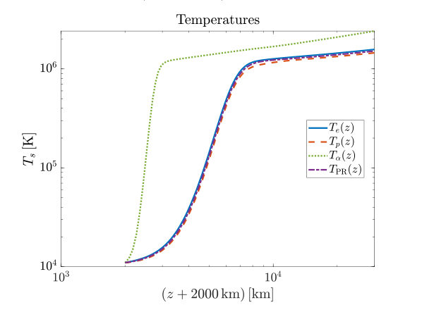
<figcaption class="paper-figure-caption"><b>Fig 4.</b> Figure 4. Effective temperatures of electrons, protons, α particles, and the corresponding Pannekoek–Rosseland solution as functions of height. The temperatures are computed from Equation (48) using the self-consistent density profiles shown in Figure 3. The values of the physical parameters are the same as those adopted in Figure 3.</figcaption>
</figure>
<figure class="paper-figure-card">
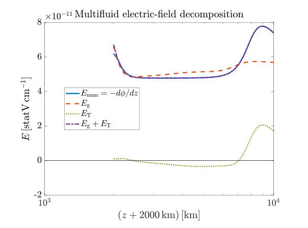
<figcaption class="paper-figure-caption"><b>Fig 5.</b> Figure 5. Decomposition of the self-consistent ambipolar electric field in the multi-temperature atmosphere. The numerical electric field, Enum = −dϕ/dz, is obtained by numerically solving Equation (51). The gravitational contribution Eg is computed from Equation (63), the thermoelectric contribution ET from Equation (64). The values of the physical parameters are the same as those adopted in Figure 3.</figcaption>
</figure>
</div>

<p><strong>Summary.</strong> This paper develops a theoretical framework to model electric fields in complex, multi-species plasma atmospheres under gravity. By extending classical plasma theories to include alpha particles and stochastic heating, the authors show that the resulting ambipolar field has distinct gravitational and thermoelectric components. This provides a comprehensive tool for understanding highly stratified astrophysical plasmas.</p>
<p><strong>Why it may be interesting.</strong> While focused on astrophysical plasma physics, the rigorous application of kinetic theory (Liouville's theorem) to derive macroscopic fields from microscopic equilibrium distributions is a powerful technique applicable to non-equilibrium statistical mechanics problems in other domains.</p>
<details>
<summary>Detailed structure</summary>
<p><strong>Main problem.</strong> The study investigates the stationary states of collisionless, gravitationally stratified plasma atmospheres composed of electrons, protons, and alpha particles.</p>
<p><strong>Main result.</strong> The ambipolar electric field is shown to decompose into a dominant gravitational component and a thermoelectric contribution arising from species-dependent temperature gradients in multi-temperature plasmas.</p>
<p><strong>Method.</strong> The authors extend Pannekoek--Rosseland theory by deriving the self-consistent ambipolar electric field from kinetic equilibrium, charge neutrality, and Liouville's theorem.</p>
<p><strong>Model / system.</strong> The model is a three-component plasma (e-, p+, alpha) in a gravitational field. The analysis progresses from single-temperature isothermal assumptions to multi-temperature regimes generated by stochastic boundary heating.</p>
<p><strong>Key observables.</strong> Ambipolar electric field (d\phi/dz), density profiles, and temperature gradients for each species.</p>
<p><strong>Important parameters / regimes.</strong> Alpha-particle abundance ($f$), gravitational acceleration ($g$), plasma temperatures ($T_s$).</p>
<p><strong>Assumptions / limitations.</strong> The system is assumed collisionless; the analysis uses perturbative expansions in $\alpha$-particle abundance and extends to multi-temperature states generated by stochastic heating.</p>
<p><strong>Figures summary.</strong> Figure 6 compares numerical solutions for the electrostatic potential with analytical approximations derived from the first-order perturbation theory, showing good agreement.</p>
<p><strong>Paper structure.</strong> The paper builds from a single-temperature analysis using Liouville's theorem to determine the ambipolar field. It then generalizes this formalism to multi-temperature plasmas, deriving the decomposition of the electric field into gravitational and thermoelectric parts.</p>
</details>
<details>
<summary>Abstract</summary>
<p>We investigate stationary states of a collisionless, gravitationally stratified plasma atmosphere composed of electrons, protons, and alpha particles by extending Pannekoek--Rosseland theory to multispecies and multi-temperature plasmas. Starting from Liouville's theorem, we derive the self-consistent ambipolar electric field from kinetic equilibrium and charge neutrality. For a single-temperature atmosphere, we obtain analytical expressions for the ambipolar field, show its dependence on alpha-particle abundance, and determine the relative stratification of the three species. A first-order analytical approximation to the electrostatic potential accurately reproduces the numerical solution. We then generalize the formalism to multi-temperature plasmas generated by stochastic boundary heating, representing the stationary distribution as a superposition of Maxwellian populations. Gravitational filtering produces non-exponential density profiles and increasing temperatures with altitude, while preserving the relative species stratification, with alpha particles most strongly stratified and protons least. The ambipolar electric field contains a dominant gravitational contribution, corresponding to the generalized Pannekoek--Rosseland field, and a thermoelectric contribution arising from species-dependent temperature gradients, which accounts for its non-monotonic structure. These results provide a framework for studying the combined effects of plasma composition and stochastic heating in gravitationally stratified astrophysical plasmas.</p>
</details>
<p><sub><a href="#top">↑ back to top</a></sub></p>

<p><a id="paper-2608.12124"></a></p>
<h3 id="two-routes-to-quantum-anomalous-hall-states-in-altermagnets"><a href="http://arxiv.org/abs/2608.12124v1">Two routes to quantum anomalous Hall states in altermagnets</a></h3>
<p><strong>Authors:</strong> Makoto Naka, Shuntaro Sumita, Yukitoshi Motome, Hitoshi Seo<br>
<strong>Type:</strong> theory · <strong>Category:</strong> strongly correlated electrons · <strong>PDF:</strong> <a href="https://arxiv.org/pdf/2608.12124v1">https://arxiv.org/pdf/2608.12124v1</a><br>
<strong>Analysis basis:</strong> full PDF text, analyzed in chunks
<strong>Topic relevance:</strong> <code>analog quantum simulation</code> <strong>3/5</strong> · <code>driven-dissipative phase transition</code> <strong>1/5</strong></p>
<div class="figure-strip-hint">↔ Scroll figures horizontally</div>
<div class="paper-figures-scroll">
<figure class="paper-figure-card">
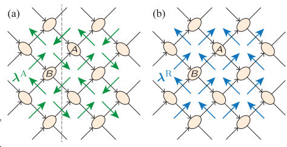
<figcaption class="paper-figure-caption"><b>Fig 1.</b> FIG. 1. Schematic lattice structure and spatial patterns of the antisymmetric SOC vectors: (a) λA ij for an orthorhombic two- dimensional altermagnet and (b) Rashba-type SOC λR ij. The green and blue solid arrows indicate the directions of λA ij and λR ij, respec- tively, on the NN bonds associated with the electron hopping along the directions indicated by the black arrows. A and B denote the crystallographically equivalent sites in the unit cell, which are con- nected by the glide operation with respect to the yz plane denoted by the dashed line.</figcaption>
</figure>
<figure class="paper-figure-card">
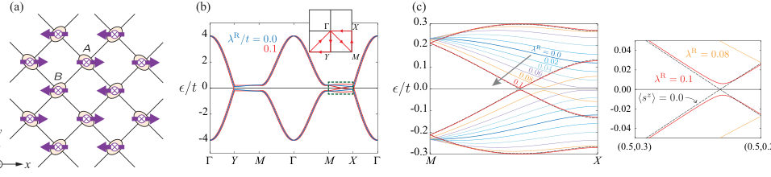
<figcaption class="paper-figure-caption"><b>Fig 2.</b> FIG. 2. (a) Schematic picture of an altermagnetic ground state of HALM + HR with the weak ferromagnetic moment along the z axis. (b) Energy band structures with and without the Rashba-type SOC term HR for λR/t = 0.0 (blue) and 0.1 (red), respectively. The inset shows the path along the high-symmetry lines in the first BZ. The dashed rectangle represents the region expanded in (c). (c) Variation of the band structure near the insulating gap on the X-M line with respect to λR/t. The dashed line denotes the band structure obtained from the self- consistent solution under the constraint of ⟨sz⟩= 0.0 at λR/t = 0.1. The right hand panel shows an enlarged view of the bands near the point node; (kx,...</figcaption>
</figure>
<figure class="paper-figure-card">
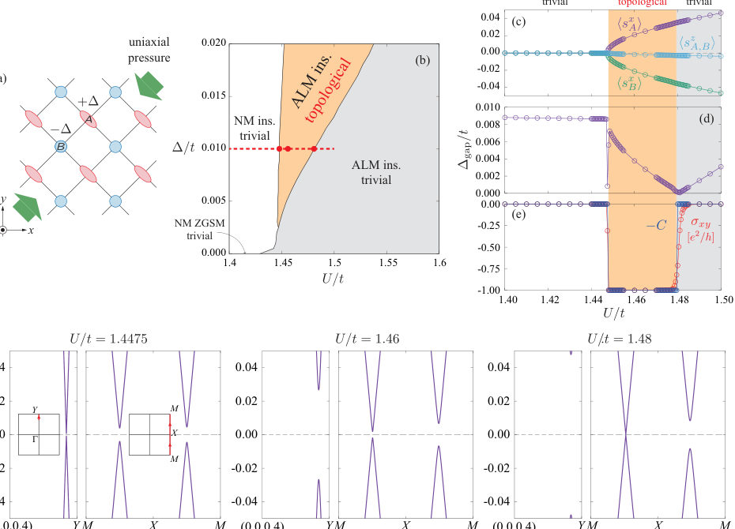
<figcaption class="paper-figure-caption"><b>Fig 3.</b> FIG. 3. (a) Schematic illustration of the system with a staggered potential induced by uniaxial pressure. (b) Ground-state phase diagram of HALM+HR+H∆in the U-∆plane. NM, ALM, and ZGSM denote nonmagnetic, altermagnetic, and zerogap semimetal states, respeectively, and the orange region indicates the topological altermagnetic phase with the Chern number |C| = 1. The dashed line represents the parameter path along which (c) the spin moments ⟨sx A,B⟩and ⟨sz A,B⟩, (d) the energy gap between the valence and conduction bands, ∆gap, and (e) the Hall conductivity σxy and the Chern number of the occupied band manifold, −C, are calculated. (f) Energy band structures near the gap for ∆/t = 0.01 at U/t...</figcaption>
</figure>
<figure class="paper-figure-card">
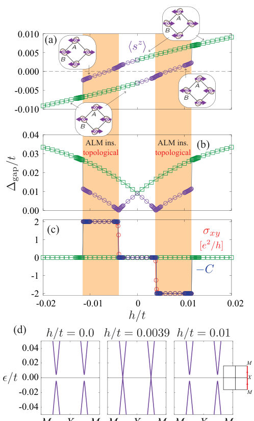
<figcaption class="paper-figure-caption"><b>Fig 4.</b> FIG. 4. Magnetic-field dependences of (a) the spin moment ⟨sz A,B⟩, (b) the energy gap ∆gap, and (c) the Hall conductivity σxy together with the Chern number of the occupied bands, −C, at U/t = 1.48. The insets in (a) show schematic spin configurations in the corre- sponding states. The square and circle symbols represent the ground- state and metastable branches, respectively. The shaded regions indi- cate the topological altermagnetic phases realized in the metastable branch. (d) Energy band structures near the energy gap along the M-X-M path at h/t = 0, 0.0039, and 0.01, corresponding to the trivial altermagnetic phase, the topological transition point, and the topological altermagnetic...</figcaption>
</figure>
<figure class="paper-figure-card">
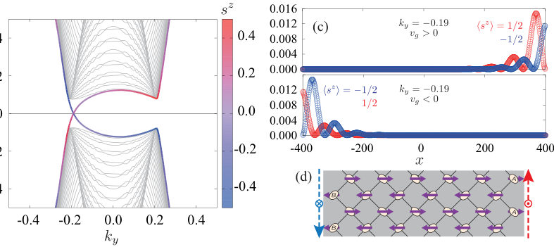
<figcaption class="paper-figure-caption"><b>Fig 5.</b> FIG. 5. (a) Schematic illustration of the ribbon geometry used in the edge-state calculations for the topological altermagnetic state. Open and periodic boundary conditions are imposed along the x and y directions, respectively. (b) Energy spectrum as a function of ky in the topological altermagnetic state induced by the staggered potential. The gray curves represent the bulk states, and the colored curves denote the in-gap edge states. The color scale indicates the expectation value of the spin moment ⟨sz⟩. (c) sz-resolved real-space distributions of the chiral edge modes at ky = −0.19 in panel (b). The spin-up and spin-down components are shown by red and blue symbols, respectively. The...</figcaption>
</figure>
</div>

<p><strong>Summary.</strong> This work presents a theoretical framework detailing two distinct methods—using a staggered potential or an external magnetic field—to induce Quantum Anomalous Hall (QAHE) effects in altermagnetic materials. The authors predict quantized Hall conductivities of $e^2/h$ and $2e^2/h$, respectively, by analyzing topological transitions marked by specific gap closings and robust chiral edge states.</p>
<p><strong>Why it may be interesting.</strong> While focused on condensed matter topology, the concept of realizing robust quantum states via controlled symmetry breaking and external fields is highly relevant to engineering novel superconducting or topological qubits in solid-state platforms.</p>
<details>
<summary>Detailed structure</summary>
<p><strong>Main problem.</strong> The paper theoretically proposes two distinct, experimentally accessible routes for realizing Quantum Anomalous Hall (QAHE) states in altermagnetic materials.</p>
<p><strong>Main result.</strong> These routes involve either applying a staggered potential ($\Delta$) to achieve $C=1$ or applying an external magnetic field ($H_Z$) to realize a metastable state with $C=2$.</p>
<p><strong>Method.</strong> The study uses theoretical modeling based on a Hubbard Hamiltonian, employing Hartree-Fock approximations and calculating topological invariants like the Chern number via band structure analysis.</p>
<p><strong>Model / system.</strong> The system is an altermagnetic material modeled by a minimal square-lattice Hubbard model incorporating antisymmetric and Rashba spin-orbit couplings. The physics is analyzed under external perturbations: a staggered potential ($\Delta$) or a perpendicular magnetic field ($H_Z$).</p>
<p><strong>Key observables.</strong> Quantized Hall conductivity ($\sigma_{xy}$), Chern number ($C$), energy gap closing/reopening at the Brillouin zone boundary, and spin-polarized chiral edge states.</p>
<p><strong>Important parameters / regimes.</strong> The key parameters are the coupling strengths (e.g., $\lambda_A, \lambda_R$) and the relative strengths of the perturbations ($\Delta/t$ or $h/t$).</p>
<p><strong>Assumptions / limitations.</strong> The analysis relies on a minimal Hubbard model framework and assumes that topological transitions can be diagnosed by gap closings at specific momenta.</p>
<p><strong>Figures summary.</strong> Figures illustrate band structures showing gap closing points corresponding to the transition between trivial and topological phases, and ribbon geometry calculations visualize the distinct spin-polarized chiral edge states for both $C=1$ and $C=2$ regimes.</p>
<p><strong>Paper structure.</strong> The paper systematically introduces the model Hamiltonian, first analyzing the ground state evolution with SOC, then detailing the two separate mechanisms (staggered potential vs. magnetic field) that drive the system into quantized topological phases, concluding with detailed edge state characterization for both cases.</p>
</details>
<details>
<summary>Abstract</summary>
<p>We theoretically propose two possible routes to realizing quantum anomalous Hall states in altermagnetic materials. We consider a minimal square-lattice Hubbard model with antisymmetric spin-orbit coupling associated with an orthorhombic crystal structure, which supports a topologically trivial altermagnetic state. By incorporating Rashba-type spin-orbit coupling and external perturbations, we demonstrate that this trivial state can be turned into topological altermagnetic phases in two distinct ways. The first route is driven by a staggered potential that breaks the symmetry connecting crystallographically equivalent sublattices, leading to a topological altermagnetic ground state characterized by a quantized Hall conductivity $\left| σ_{xy} \right|=e^2/h$ and a Chern number $C=1$. The second route is realized by applying a magnetic field perpendicular to the two-dimensional plane. The resulting topological state appears as a metastable state in the magnetic hysteresis loop, exhibiting a quantized Hall conductivity $\left| σ_{xy} \right|=2e^2/h$ associated with a Chern number $C=2$. We show that these topological transitions are accompanied by characteristic gap closings at the Brillouin-zone boundary, with the number of gap-closing points determining the Chern number. Ribbon-geometry calculations reveal chiral edge states consistent with the bulk topological invariants and demonstrate distinct spin polarizations between the $C=1$ and $C=2$ states. Our results establish experimentally accessible routes to quantized anomalous Hall responses in altermagnets.</p>
</details>
<p><sub><a href="#top">↑ back to top</a></sub></p>

<p><a id="paper-2608.11450"></a></p>
<h3 id="layer-number-controlled-symmetry-breaking-and-surface-state-transport-in-rhombohedral-graphene-multilayers"><a href="http://arxiv.org/abs/2608.11450v1">Layer-Number-Controlled Symmetry Breaking and Surface-State Transport in Rhombohedral Graphene Multilayers</a></h3>
<p><strong>Authors:</strong> Bosai Lyu, Jian Zheng, Kai Liu, Yulu Ren, Size Wu, Yating Sha, Shuhan Liu, Youngju Park, Kenji Watanabe, Takashi Taniguchi, Jinfeng Jia, Zhiwen Shi, Jeil Jung, Weidong Luo, Guorui Chen<br>
<strong>Type:</strong> both · <strong>Category:</strong> strongly correlated electrons · <strong>PDF:</strong> <a href="https://arxiv.org/pdf/2608.11450v1">https://arxiv.org/pdf/2608.11450v1</a><br>
<strong>Analysis basis:</strong> full PDF text, analyzed in chunks
<strong>Topic relevance:</strong> <code>Keldysh / 2PI / non-Gaussian methods</code> <strong>2/5</strong> · <code>analog quantum simulation</code> <strong>2/5</strong> · <code>driven-dissipative phase transition</code> <strong>2/5</strong> · <code>methods for driven-dissipative</code> <strong>2/5</strong> · <code>correlated / nonlocal dissipation</code> <strong>1/5</strong> · <code>non-equilibrium universality</code> <strong>1/5</strong> · <code>quantum measurements</code> <strong>1/5</strong></p>
<div class="figure-strip-hint">↔ Scroll figures horizontally</div>
<div class="paper-figures-scroll">
<figure class="paper-figure-card">
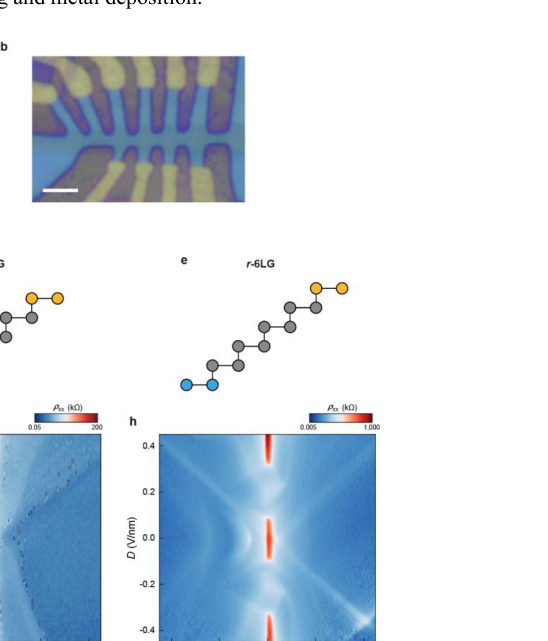
<figcaption class="paper-figure-caption"><b>Fig 1.</b> Figure 1. Rhombohedral 4, 5, 6-layer graphene. a, Schematic of the dual-gated devices. b, Optical</figcaption>
</figure>
<figure class="paper-figure-card">
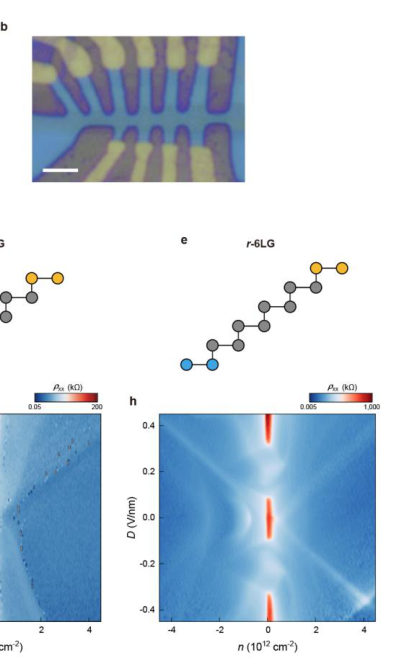
<figcaption class="paper-figure-caption"><b>Fig 2.</b> Figure 1c-h show illustrations of unit cells and color plots of the measured resistivity 𝜌xx as functions of n and D (1.5 K, B = 0 T) of r-4LG-D1 (c,f), r-5LG-D1 (d,g) and r-6LG-D1 (e,h), see also Sec. 1 of Supplementary Information for colormaps of r-8LG-D1 and other additional devices. From these color plots, three phases with distinct resistivities are resolved at n = 0 for different D in r-4LG through r-6LG. The insulating, semimetallic, and insulating phases at different D together with transitions between them from r-4LG to r-6LG are more clearly presented by the line cuts at n = 0 measured at different temperatures shown as Fig. 2a (also see Sec. 2 of Supplementary Information for...</figcaption>
</figure>
<figure class="paper-figure-card">
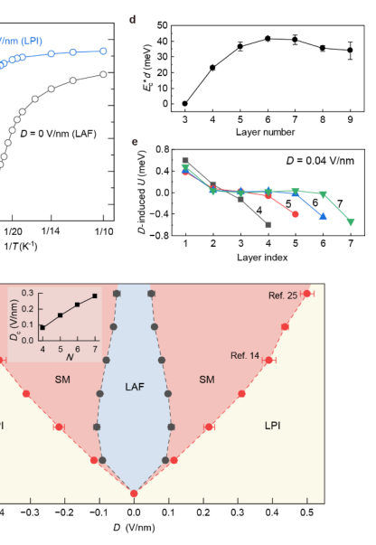
<figcaption class="paper-figure-caption"><b>Fig 3.</b> Figure 2. Layer-dependent phase transitions driven by D at n = 0. a, D-dependent 𝜌xx of r-4LG to</figcaption>
</figure>
<figure class="paper-figure-card">
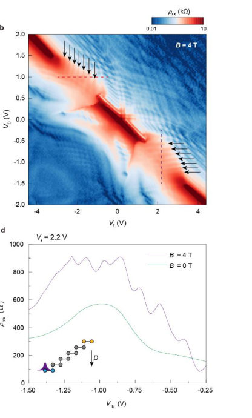
<figcaption class="paper-figure-caption"><b>Fig 4.</b> Figure 3. Surface-state-dominated transport characteristics in r-6LG. a, b, longitudinal resistivity</figcaption>
</figure>
</div>

<p><strong>Summary.</strong> This work systematically explores how changing the number of layers in rhombohedral graphene modifies its electronic behavior. By combining transport measurements with theoretical modeling, the authors reveal that layer count controls critical phase transitions and enhances interlayer screening. This establishes layer number as a powerful tool for engineering correlated and topological quantum states.</p>
<p><strong>Why it may be interesting.</strong> The strong dependence on layer number and the explicit study of correlation effects (LAF state) and screening mechanisms provide a rich platform for understanding emergent quantum phases in low-dimensional correlated electron systems, relevant to topological materials research.</p>
<details>
<summary>Detailed structure</summary>
<p><strong>Main problem.</strong> The study investigates how the number of layers controls symmetry breaking, surface screening, and electronic phases in rhombohedral graphene multilayers.</p>
<p><strong>Main result.</strong> Layer number acts as a key tuning knob, leading to distinct layer-dependent phase transitions (LAF $\leftrightarrow$ SM $\leftrightarrow$ LPI) and enhanced interlayer screening effects in thicker stacks.</p>
<p><strong>Method.</strong> The research combines electrical transport measurements ($
ho_{xx}$ vs. gate voltages/displacement fields) with self-consistent electrostatic tight-binding calculations.</p>
<p><strong>Model / system.</strong> The physical system is rhombohedral graphene multilayers (r-NLG), studied across several layer numbers ($N=4$ to $8$). The physics involves correlated electronic states, spontaneous symmetry breaking (LAF state), and screening effects governed by the external displacement field.</p>
<p><strong>Key observables.</strong> Critical displacement fields ($D_c$) for phase transitions, longitudinal resistivity ($
ho_{xx}$), Landau level (LL) crossing patterns, and the electronic screening factor ($S$).</p>
<p><strong>Important parameters / regimes.</strong> Layer number ($N$), applied displacement field ($D$), magnetic field ($B$), and carrier density ($n$).</p>
<p><strong>Assumptions / limitations.</strong> The insulating states observed are attributed to electron-electron interactions (LAF state) rather than single-particle band gaps, which is confirmed by calculations.</p>
<p><strong>Figures summary.</strong> Figures illustrate phase diagrams ($
ho_{xx}$ vs $n$ and $D$), layer-resolved potential profiles showing screening increase with $N$, and LL structures used to determine the number of layers.</p>
<p><strong>Paper structure.</strong> The paper systematically maps out phase transitions (LAF $ o$ SM $ o$ LPI) as a function of $N$ and $D$. It then delves into the mechanism, highlighting how increased screening in thicker films modifies surface-state transport and LL behavior under magnetic fields.</p>
</details>
<details>
<summary>Abstract</summary>
<p>Rhombohedral multilayer graphene hosts layer-polarized flat bands, providing an intriguing platform for correlated and topological electronic states; however, the role of layer number in governing symmetry breaking and surface screening remains elusive. Here we prepare rhombohedral graphene multilayers and systematically conduct electrical transport measurements. We uncover an unconventional layer dependence of phase transitions: the critical displacement field (D$_{c}$) for the layer-antiferromagnetic (LAF)-to-semimetal transitions remains constant across tetralayer to hexalayer graphene, whereas the D$_{c}$ for semimetal-to-layer-polarized-insulator (LPI) transition increases with layer number, defying unscreened Coulomb interaction models. In hexalayer graphene, surface-state-dominated transport emerges, with Landau levels (LLs) and resistive peaks selectively controlled by adjacent gates, a signature of strong interlayer screening absent in thinner stacks. High magnetic fields reveal valley-layer-locked LLs and dissipative states possibly from interlayer backscattering, highlighting the presence of decoupled surface states. Our findings establish layer number as a key tuning knob for engineering correlated and topological phases in rhombohedral graphene multilayers.</p>
</details>
<p><sub><a href="#top">↑ back to top</a></sub></p>

<p><a id="paper-2608.12157"></a></p>
<h3 id="connecting-the-tensor-categorical-formulation-of-anyon-condensation-with-operator-algebras-and-entropic-order-parameters"><a href="http://arxiv.org/abs/2608.12157v1">Connecting the tensor-categorical formulation of anyon condensation with operator algebras and entropic order parameters</a></h3>
<p><strong>Authors:</strong> Hua-Chen Zhang<br>
<strong>Type:</strong> theory · <strong>Category:</strong> strongly correlated electrons · <strong>PDF:</strong> <a href="https://arxiv.org/pdf/2608.12157v1">https://arxiv.org/pdf/2608.12157v1</a><br>
<strong>Analysis basis:</strong> full PDF text, analyzed in chunks
<strong>Topic relevance:</strong> <code>analog quantum simulation</code> <strong>2/5</strong> · <code>driven-dissipative phase transition</code> <strong>2/5</strong> · <code>non-equilibrium universality</code> <strong>2/5</strong> · <code>Keldysh / 2PI / non-Gaussian methods</code> <strong>1/5</strong> · <code>correlated / nonlocal dissipation</code> <strong>1/5</strong> · <code>methods for driven-dissipative</code> <strong>1/5</strong> · <code>quantum measurements</code> <strong>1/5</strong></p>
<div class="figure-strip-hint">↔ Scroll figures horizontally</div>
<div class="paper-figures-scroll">
<figure class="paper-figure-card">
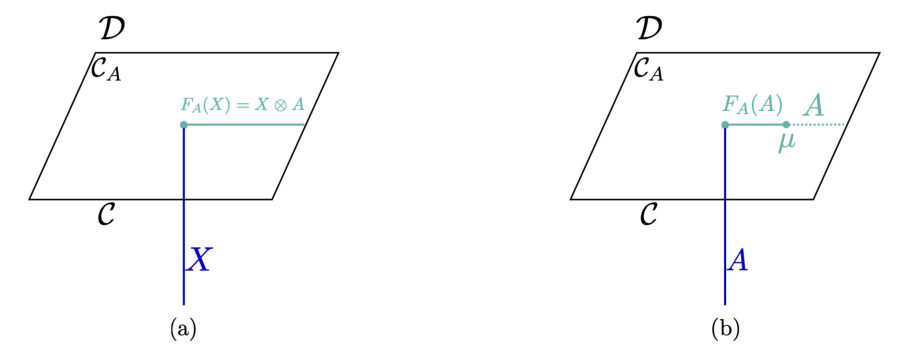
<figcaption class="paper-figure-caption"><b>Fig 1.</b> Figure 1: (a) The free A-module functor FA : C →CA with FA(X) = X ⊗A determines what happens when an anyon X from topological order C is brought to the interface described by the module category CA. D, sitting on the other side of this interface, is the post-condensation topological order to be identified below. (b) As A is the invisible topological line (depicted as a dashed line here and simply omitted in the following) on the interface CA, composing FA with the multiplication µ : A ⊗A →A, one finds that the bulk line A can end topologically on this interface.</figcaption>
</figure>
<figure class="paper-figure-card">
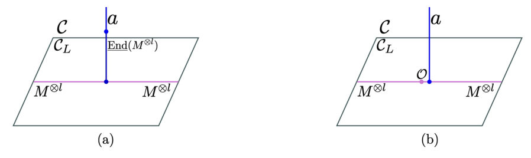
<figcaption class="paper-figure-caption"><b>Fig 2.</b> Figure 2: (a) For a strongly tensor generating object M ∈CL and a sufficiently large l, any a ∈Irr(C) arises in the decomposition of the internal end End(M⊗l). (b) Acting an operator O ∈EndCL(M⊗l) on an element in the bimodule labelled by a, which is represented as a junction operator joining the bulk line a with the boundary lines M⊗l, amounts to bringing O close to the junction and performing the OPE. The latter produces another junction operator attached to a.</figcaption>
</figure>
<figure class="paper-figure-card">
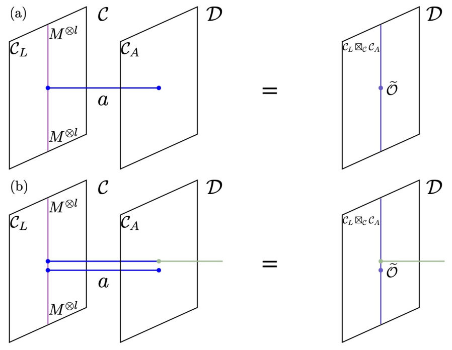
<figcaption class="paper-figure-caption"><b>Fig 3.</b> Figure 3: The bulk line a ∈Irr(C) can end topologically on the interface CA, and M is a strongly tensor generating object in CL. (a) An operator sits at the junction joining a with the lines M⊗l on the boundary. eO, obtained when hitting this junction operator with the interface by collapsing the C layer, becomes an element in A upon taking the inductive limit. (b) The action of eO via OPE. Repeating the arguments we made above [c.f. figure 2(b)], one realises that every bulk line in the TQFT D labels a bimodule over A; in fact, D ∼= DHR(A).</figcaption>
</figure>
</div>

<p><strong>Summary.</strong> This theoretical paper unifies two advanced mathematical descriptions—tensor categories and operator algebras—to study anyon condensation in topological matter. It introduces an entropic order parameter, providing a rigorous bound on this measure that characterizes the transition into a condensed phase. The work is significant for its deep mathematical connection between quantum information theory and exotic phases of matter.</p>
<p><strong>Why it may be interesting.</strong> While highly abstract, the use of entanglement measures like relative entropy to characterize phase transitions is directly relevant to understanding quantum criticality and topological phases in strongly correlated electron systems.</p>
<details>
<summary>Detailed structure</summary>
<p><strong>Main problem.</strong> The paper aims to connect two formalisms—tensor-categorical and operator algebraic—used to describe anyon condensation in topological quantum field theories.</p>
<p><strong>Main result.</strong> It establishes a manifest connection between these two frameworks and provides a simple proof for an upper bound on the entropic order parameter characterizing the condensation transition.</p>
<p><strong>Method.</strong> The authors deploy Doplicher-Haag-Roberts bimodules over quasi-local C*-algebras to investigate anyon condensation, relating this structure to tensor categories via module functors.</p>
<p><strong>Model / system.</strong> The study focuses on anyon condensation, which describes phase transitions between $(2+1)$-dimensional topological orders or TQFTs. The analysis uses models like quantum doubles ($S_3$) and product theories (e.g., double Fibonacci/Ising).</p>
<p><strong>Key observables.</strong> Entropic order parameter $S(\omega|\omega \circ E)$, which is a quantum information-theoretic measure of condensation.</p>
<p><strong>Important parameters / regimes.</strong> The quantum dimension ($d_A$) of the condensable algebra $A$, and the topological state $\omega$.</p>
<p><strong>Assumptions / limitations.</strong> The analysis assumes the existence of a topological (gapped) boundary, restricting the scope to cases where the underlying MTC has trivial Witt class.</p>
<p><strong>Figures summary.</strong> Figure 1 illustrates the free A-module functor connecting bulk theory ($\mathcal{C}$) to an interface ($\mathcal{C}_A$). Figure 2 relates simple objects in $    ext{Irr}(\mathcal{C})$ to localizable bimodules over the boundary algebra $M$.</p>
<p><strong>Paper structure.</strong> The paper proceeds by first defining the tensor-categorical view (using module categories) and then mapping this structure onto the operator algebraic framework using DHR bimodules, culminating in the derivation of bounds on the entropic order parameter.</p>
</details>
<details>
<summary>Abstract</summary>
<p>Anyon condensation that describes the transition between topological quantum field theories can be formulated in the language of tensor categories or that of operator algebras. We deploy the formalism of Doplicher-Haag-Roberts bimodules over quasi-local $\mathrm{C}^{*}$-algebras recently developed in [1] to investigate anyon condensation, which is associated with an extension of a certain operator algebra. The connection between notions in the two formulations is thereby made manifest in an intuitive, diagrammatic manner. An entropic order parameter, as the quantum information-theoretic measure characterising a condensation, is naturally defined, and we give a very simple proof of a bound on it.</p>
</details>
<p><sub><a href="#top">↑ back to top</a></sub></p>

<p><a id="paper-2608.12303"></a></p>
<h3 id="proliferation-transitions-for-non-abelian-anyons"><a href="http://arxiv.org/abs/2608.12303v1">Proliferation Transitions for Non-Abelian Anyons</a></h3>
<p><strong>Authors:</strong> Sakura Schafer-Nameki, Yunqin Zheng, Andrea Antinucci<br>
<strong>Type:</strong> theory · <strong>Category:</strong> strongly correlated electrons · <strong>PDF:</strong> <a href="https://arxiv.org/pdf/2608.12303v1">https://arxiv.org/pdf/2608.12303v1</a><br>
<strong>Analysis basis:</strong> full PDF text, analyzed in chunks
<strong>Topic relevance:</strong> <code>Keldysh / 2PI / non-Gaussian methods</code> <strong>2/5</strong> · <code>driven-dissipative phase transition</code> <strong>2/5</strong> · <code>analog quantum simulation</code> <strong>1/5</strong> · <code>correlated / nonlocal dissipation</code> <strong>1/5</strong> · <code>methods for driven-dissipative</code> <strong>1/5</strong> · <code>quantum measurements</code> <strong>1/5</strong></p>
<div class="figure-strip-hint">↔ Scroll figures horizontally</div>
<div class="paper-figures-scroll">
<figure class="paper-figure-card">
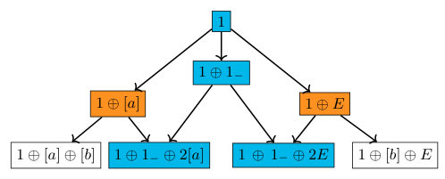
<figcaption class="paper-figure-caption"><b>Fig 1.</b> Figure 1. The condensable algebras of D(S3), partially or- dered by the subalgebra relation. The cyan ones form subcat- egories, orange ones have a generated sub-category Rep(G), the uncolored are mixed algebras of type (iii).</figcaption>
</figure>
<figure class="paper-figure-card">
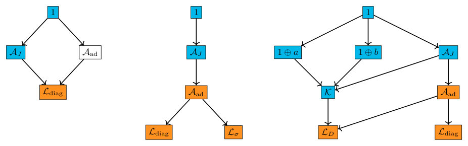
<figcaption class="paper-figure-caption"><b>Fig 2.</b> Figure 2. The Hasse diagrams of condensable algebras of Tk = SU(2)k ⊠SU(2)−k for generic k odd, k = 2 mod 4 and k = 0 mod 4, excluding the exceptional cases k = 10, 16, 28. cyan are type (i), orange type (ii), uncolored type (iii) algebras, respectively. The algebras are: AJ = 1 ⊕c, Aad = ⊕j∈Z(j, j), the two chiral D-type algebras 1 ⊕a and 1 ⊕b, K = 1 ⊕a ⊕b ⊕c. Finally there are the Lagrangian algebras: Ldiag = ⊕j(j, j), AD = Aad ⊗(1 ⊕a), and Lσ of (6.50). At k ≡2 mod 4, Aad is super-Tannakian, so its type (ii) only for ⟨1 ⊕c⟩.</figcaption>
</figure>
</div>

<p><strong>Summary.</strong> The paper develops a general theoretical framework using Symmetry Topological Field Theory (SymTFT) to describe how condensable anyons cause a TQFT to undergo a phase transition. By classifying the underlying algebraic structure into three types, the authors provide systematic methods to calculate the resulting condensed topological order, applicable to complex non-Abelian systems.</p>
<p><strong>Why it may be interesting.</strong> This work provides a powerful mathematical machinery (SymTFT) to analyze phase transitions in exotic quantum matter states like fractional quantum Hall systems, linking topological order parameters directly to symmetry breaking mechanisms analogous to Higgsing transitions.</p>
<details>
<summary>Detailed structure</summary>
<p><strong>Main problem.</strong> The research aims to systematically construct and analyze phase transitions that occur when condensable anyons proliferate within a general 2+1 dimensional Topological Quantum Field Theory (TQFT). This transition maps the initial TQFT $T$ to a reduced TQFT, $T/A$.</p>
<p><strong>Main result.</strong> The proliferation transition is realized by coupling scalar fields on the symmetry boundary of a Symmetry Topological Field Theory (SymTFT) and tuning a mass term. The structure of this transition depends systematically on the classification type (i, ii, or iii) of the condensable algebra.</p>
<p><strong>Method.</strong> The core methodology involves using the SymTFT framework to embed the 2+1d TQFT into a 3+1d gauge theory. The condensation process is modeled by tuning mass terms for boundary scalars, leading to different mathematical structures depending on the underlying symmetry algebra.</p>
<p><strong>Model / system.</strong> The system under study is defined by Topological Quantum Field Theories (TQFTs) characterized by Modular Tensor Categories (MTCs), which describe fractional quantum Hall states and non-Abelian anyons. Specific examples include $D(S_3)$ and $    ext{SU}(2)_k$ Chern-Simons theories.</p>
<p><strong>Key observables.</strong> The order parameter is related to the vacuum expectation values of boundary scalars, and key observables include the residual algebra ($b_A$) and the structure of the Higgsed phase.</p>
<p><strong>Important parameters / regimes.</strong> The transition is controlled by tuning a mass term $m^2$ for boundary scalars: $m^2 > 0$ (original TQFT), $m^2 < 0$ (condensed TQFT), and $m^2 = 0$ (transition point).</p>
<p><strong>Assumptions / limitations.</strong> The approach assumes the condensable algebra $A$ can be associated with a symmetry group $G$ via its Mügenger center, allowing for the SymTFT realization. The analysis is initially focused on transparent bosons.</p>
<p><strong>Figures summary.</strong> Table I summarizes the three types of algebras (i, ii, iii) and their corresponding proliferation transition structures within the SymTFT components ($M_A$, $N_A$, etc.).</p>
<p><strong>Paper structure.</strong> The paper first establishes the general framework using SymTFT to define the condensation process. It then classifies condensable algebras into three types (i, ii, iii) based on their relationship with the Mügenger center. The structure of the transition is derived for each type, illustrated by examples ranging from abelian theories to non-abelian Chern-Simons models.</p>
</details>
<details>
<summary>Abstract</summary>
<p>We construct phase transitions that proliferate condensable anyons in general 2+1d topological orders, including non-abelian ones. The central tool that provides a systematic approach to this question is the Symmetry Topological Field Theory (SymTFT). For a given topological order, we identify the relevant symmetry from the transparent lines generated by the condensable anyons, and thereby realize the topological order in terms of a 3+1d SymTFT sandwich. The proliferation phase transition is realized by coupling scalar fields to the anyons purely on the symmetry boundary of the SymTFT. We illustrate the construction for abelian theories, as well as non-abelian ones, $D(S_3)$ and $SU(2)_k$ Chern-Simons theories, and extend it to anomalous anyons.</p>
</details>
<p><sub><a href="#top">↑ back to top</a></sub></p>

<p><a id="paper-2608.11872"></a></p>
<h3 id="limitations-on-joint-coherence-transfer-in-quantum-thermodynamics"><a href="http://arxiv.org/abs/2608.11872v1">Limitations on Joint Coherence Transfer in Quantum Thermodynamics</a></h3>
<p><strong>Authors:</strong> Piotr Ćwikliński, Michał Studziński<br>
<strong>Type:</strong> theory · <strong>Category:</strong> statistical mechanics · <strong>PDF:</strong> <a href="https://arxiv.org/pdf/2608.11872v1">https://arxiv.org/pdf/2608.11872v1</a><br>
<strong>Analysis basis:</strong> full PDF text, analyzed in chunks
<strong>Topic relevance:</strong> <code>driven-dissipative phase transition</code> <strong>2/5</strong> · <code>Keldysh / 2PI / non-Gaussian methods</code> <strong>1/5</strong> · <code>correlated / nonlocal dissipation</code> <strong>1/5</strong> · <code>methods for driven-dissipative</code> <strong>1/5</strong> · <code>non-equilibrium universality</code> <strong>1/5</strong> · <code>quantum measurements</code> <strong>1/5</strong></p>
<div class="figure-strip-hint">↔ Scroll figures horizontally</div>
<div class="paper-figures-scroll">
<figure class="paper-figure-card">
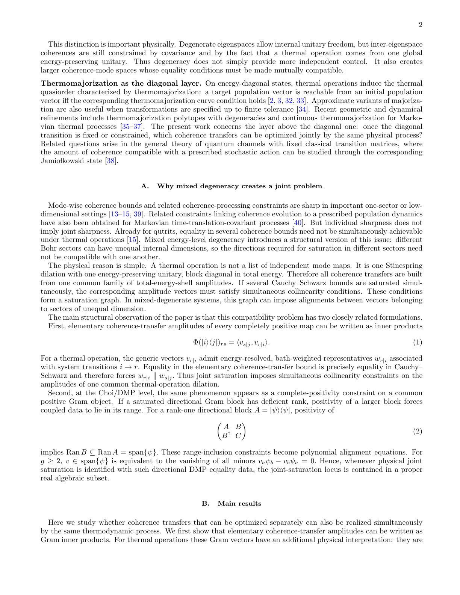
<figcaption class="paper-figure-caption"><b>Fig 1.</b> Low-resolution page preview, page 2</figcaption>
</figure>
<figure class="paper-figure-card">
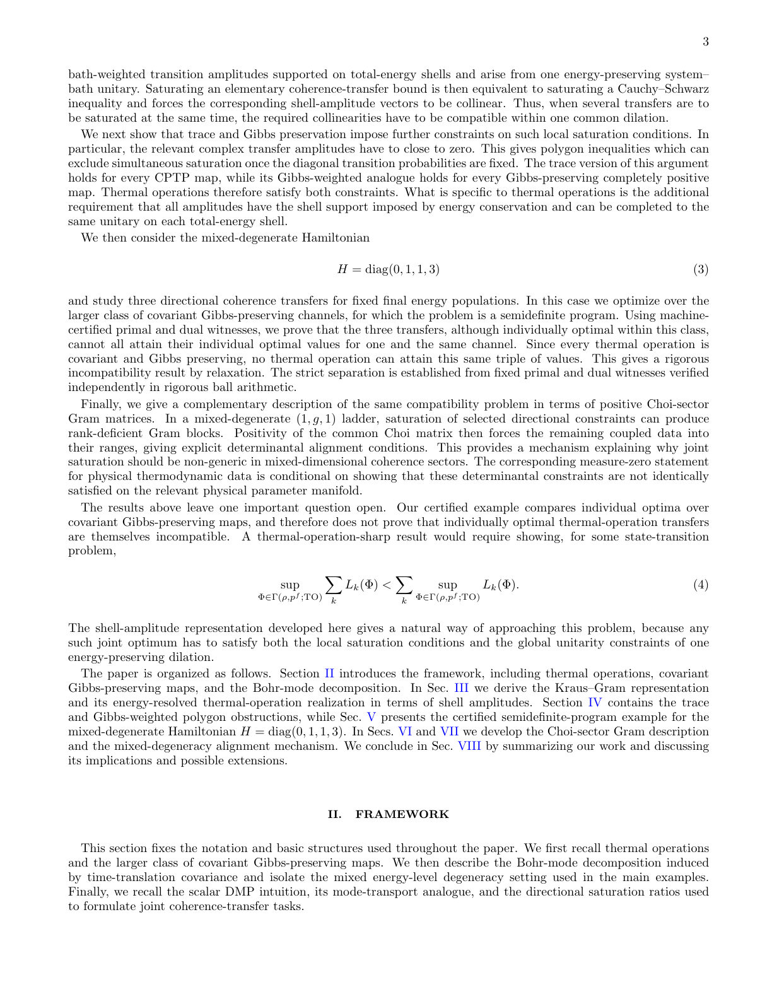
<figcaption class="paper-figure-caption"><b>Fig 2.</b> Low-resolution page preview, page 3</figcaption>
</figure>
<figure class="paper-figure-card">
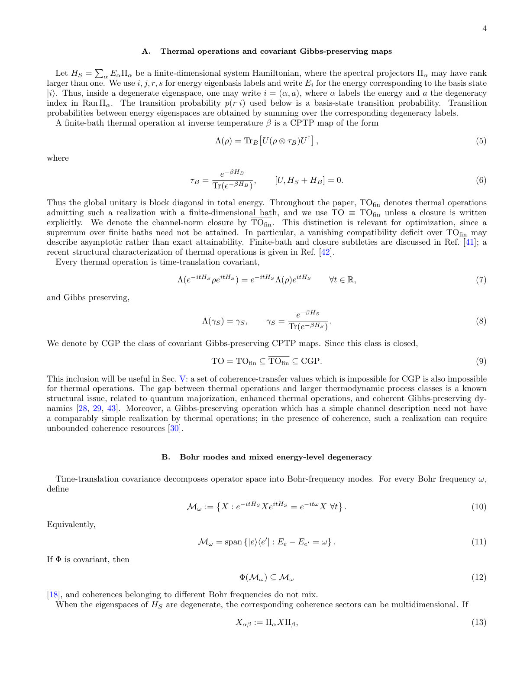
<figcaption class="paper-figure-caption"><b>Fig 3.</b> Low-resolution page preview, page 4</figcaption>
</figure>
<figure class="paper-figure-card">
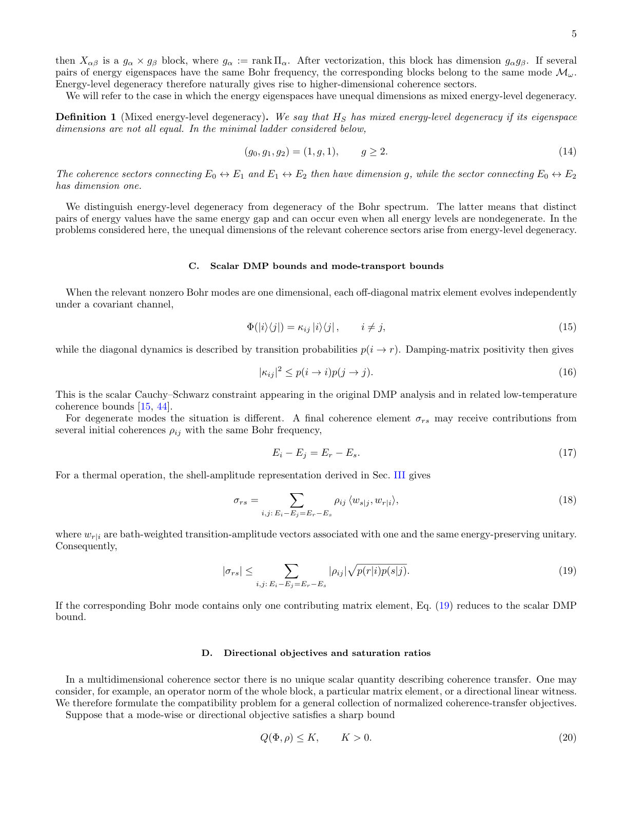
<figcaption class="paper-figure-caption"><b>Fig 4.</b> Low-resolution page preview, page 5</figcaption>
</figure>
<figure class="paper-figure-card">
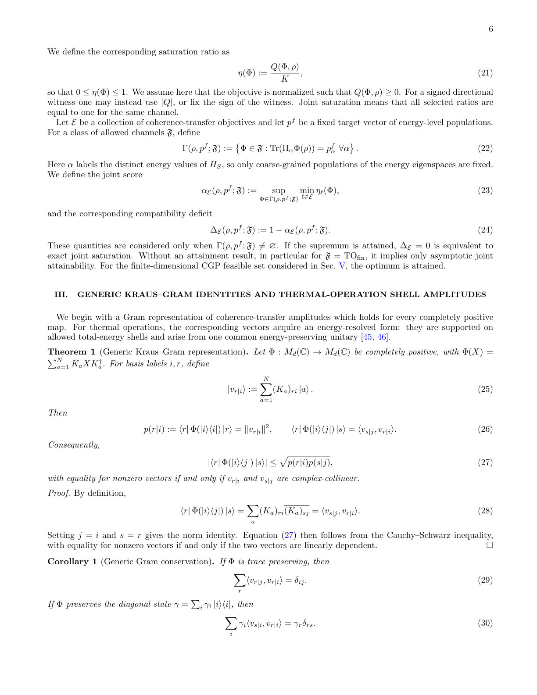
<figcaption class="paper-figure-caption"><b>Fig 5.</b> Low-resolution page preview, page 6</figcaption>
</figure>
</div>

<p><strong>Summary.</strong> This paper investigates whether multiple individually optimal coherence transfers in a quantum system can be achieved simultaneously by one single thermodynamic process. Using advanced techniques including Stinespring representations and semidefinite programming, the authors prove that this joint optimization is generally impossible due to inherent compatibility constraints imposed by thermal operations. The results highlight a fundamental limitation on what physical processes can achieve when optimizing multiple distinct quantum coherence measures.</p>
<p><strong>Why it may be interesting.</strong> This work provides fundamental mathematical constraints on the operational capabilities of quantum systems under thermalization, showing that local optimization goals can conflict when constrained by global physical processes like energy conservation.</p>
<details>
<summary>Detailed structure</summary>
<p><strong>Main problem.</strong> The core problem is determining if multiple coherence transfers, each individually achievable optimally by a quantum process, can be simultaneously optimized by the same single thermodynamic process.</p>
<p><strong>Main result.</strong> The authors prove that joint optimization of these coherence transfers is generally impossible for thermal operations, even when individual optimizations are possible. This incompatibility is rigorously demonstrated using semidefinite programming and algebraic constraints.</p>
<p><strong>Method.</strong> The analysis employs energy-resolved Stinespring representations, formulating the problem as a compatibility condition constrained by trace and Gibbs preservation laws, which leads to polygon inequalities and SDP formulations.</p>
<p><strong>Model / system.</strong> The study uses quantum thermodynamics applied to a system described by a mixed-degenerate Hamiltonian $H=	ext{diag}(0,1,1,3)$. The processes considered are thermal operations (TO), which must be covariant and Gibbs preserving.</p>
<p><strong>Key observables.</strong> Coherence transfer amplitudes ($\Phi(|i
angle\langle j|)$) and the feasibility of joint saturation for these transfers.</p>
<p><strong>Important parameters / regimes.</strong> The structure of the mixed-degenerate Hamiltonian, population transfer data ($p_f$), and the constraints imposed by thermal operations (covariance, Gibbs preservation).</p>
<p><strong>Assumptions / limitations.</strong> The analysis assumes that any physical process must be a thermal operation derived from an energy-preserving system-bath unitary.</p>
<p><strong>Paper structure.</strong> The paper develops the problem by relating coherence transfers to inner products of bath-weighted vectors, establishing necessary conditions via Cauchy-Schwarz bounds. It then incorporates thermodynamic constraints (trace/Gibbs preservation) leading to inequalities and culminates in a rigorous SDP analysis proving incompatibility for specific cases.</p>
</details>
<details>
<summary>Abstract</summary>
<p>Coherences between different energy levels are strongly constrained by thermodynamics. Here we ask a related question: if several coherence transfers can be optimized separately, can they also be optimized simultaneously by the same thermodynamic process? We show that this is in general a compatibility problem. Using an energy-resolved Stinespring representation of thermal operations, we express elementary coherence-transfer amplitudes as inner products of bath-weighted vectors associated with total-energy shells. Saturation of the corresponding Cauchy--Schwarz bounds requires these vectors to be collinear. Since all transfers have to arise from the same energy-preserving system--bath unitary, such saturation conditions cannot in general be imposed independently. Trace and Gibbs preservation lead to additional phase-closure conditions and to polygon inequalities that can rule out simultaneous saturation for fixed population-transfer data.   We complement these analytic results with a rigorous computer-assisted semidefinite-program analysis. For the mixed-degenerate Hamiltonian $H=\operatorname{diag}(0,1,1,3)$, machine-certified primal and dual bounds show that no covariant Gibbs-preserving channel can simultaneously attain three individually optimal directional coherence transfers. Since every thermal operation is covariant and Gibbs preserving, the same triple of optimal values cannot be attained by a thermal operation. We further relate this incompatibility to range-inclusion constraints in Choi-sector Gram matrices for mixed-degenerate energy levels. Our results show that coherence transfers which are optimal when considered separately need not be compatible with one physical thermodynamic process. A full characterization of this incompatibility directly within thermal operations remains open.</p>
</details>
<p><sub><a href="#top">↑ back to top</a></sub></p>

<p><a id="paper-2608.11615"></a></p>
<h3 id="spin-lifetime-anisotropy-in-graphene-induced-by-the-sio2-interface"><a href="http://arxiv.org/abs/2608.11615v1">Spin lifetime anisotropy in graphene induced by the SiO2 interface</a></h3>
<p><strong>Authors:</strong> Aron W. Cummings, Chunhao Guo, Andrew Grieder, Shihao Tu, Mayank Gupta, Junqing Xu, Juan Marmolejo-Tejada, Yuan Ping<br>
<strong>Type:</strong> theory · <strong>Category:</strong> other · <strong>PDF:</strong> <a href="https://arxiv.org/pdf/2608.11615v1">https://arxiv.org/pdf/2608.11615v1</a><br>
<strong>Analysis basis:</strong> full PDF text, analyzed in chunks
<strong>Topic relevance:</strong> <code>Keldysh / 2PI / non-Gaussian methods</code> <strong>2/5</strong> · <code>methods for driven-dissipative</code> <strong>2/5</strong> · <code>correlated / nonlocal dissipation</code> <strong>1/5</strong> · <code>quantum measurements</code> <strong>1/5</strong></p>
<div class="figure-strip-hint">↔ Scroll figures horizontally</div>
<div class="paper-figures-scroll">
<figure class="paper-figure-card">

<figcaption class="paper-figure-caption"><b>Fig 1.</b> FIG. 1. (a) Crystal structure of the graphene and 2D SiO2 interface with AB stacking. (b) Crystal structure of graphene and bulk SiO2 interface with AA stacking and Si termination. The green bonds in graphene indicate those modified by prox- imity to the SiO2, see Eq. (2) and the associated discussion.</figcaption>
</figure>
<figure class="paper-figure-card">

<figcaption class="paper-figure-caption"><b>Fig 2.</b> FIG. 2. Band structure and spin texture of graphene on SiO2. The left (right) column shows the case of graphene on 2D SiO2 (bulk SiO2). Panels (a) and (b) show the DFT band structure over the Brillouin zone, while (c) and (d) show a zoom of the bands around the graphene Dirac point, including the fit to the TB model. Panels (e) and (f) show the DFT spin texture of the the highest valence band of graphene, while (g) and (h) show the spin texture calculated from the TB model.</figcaption>
</figure>
<figure class="paper-figure-card">

<figcaption class="paper-figure-caption"><b>Fig 3.</b> FIG. 3. (a) In-plane and out-of-plane spin lifetime as a func- tion of chemical potential for graphene on 2D SiO2, with re- laxation driven by electron-phonon scattering at 300 K. Solid lines are from first-principles real-time dynamics, and dot- ted lines are calculated lifetimes assuming DP spin relaxation from Eq. (17) with ab initio parameters. The lifetime as a function of temperature-dependent (at µ = 25 meV above the CB minimum) is shown in the inset. (b) The corresponding spin lifetime anisotropy. (c) Spin lifetime arising from scatter- ing by long-range electron-hole puddles, calculated with the real-space TB approach. (d) The corresponding anisotropies.</figcaption>
</figure>
<figure class="paper-figure-card">

<figcaption class="paper-figure-caption"><b>Fig 4.</b> FIG. 4. (a) In-plane and out-of-plane spin lifetime as a func- tion of chemical potential for graphene on bulk SiO2, with re- laxation driven by oxygen vacancies, and (b) the correspond- ing spin lifetime anisotropies. (c) Spin lifetime arising from scattering by long-range electron-hole puddles that do not in- duce intervalley scattering, calculated with the TB model, and (d) the corresponding spin lifetime anisotropies. (e) Spin lifetime arising from short-range electron-hole puddles that induce intervalley scattering, and (f) the corresponding spin lifetime anisotropies.</figcaption>
</figure>
<figure class="paper-figure-card">

<figcaption class="paper-figure-caption"><b>Fig 5.</b> Figure 4(a) shows the spin lifetime as a function of chemical potential, arising from scattering by oxygen va- cancies in the SiO2 substrate. Comparing to Fig. 3, the spin lifetime is qualitatively different for graphene on 2D SiO2. Here, τs is relatively independent of chemi- cal potential, only varying by around 20%. Meanwhile, as shown in the SM [45], the momentum relaxation time varies strongly over this range of µ, by more than a factor of 6, suggesting that spin relaxation and charge scatter- ing are effectively decoupled. We examine the mechanism for spin relaxation in further detail in Sec. III D below. Figure 4(b) shows the spin lifetime anisotropy aris- ing from oxygen vacancies,...</figcaption>
</figure>
</div>

<p><strong>Summary.</strong> This paper uses advanced numerical simulations to investigate how SiO2 substrates modify spin transport in graphene. It finds that the interface dictates a complex spin texture, leading to measurable spin lifetime anisotropies depending on whether the substrate is modeled as 2D or bulk. The results offer critical guidance for interpreting experimental measurements and engineering better spintronic materials.</p>
<p><strong>Why it may be interesting.</strong> This work provides detailed insights into spin relaxation in graphene interfaces, which is crucial for designing functional spintronic devices by understanding substrate-induced spin-orbit coupling effects beyond simple models.</p>
<details>
<summary>Detailed structure</summary>
<p><strong>Main problem.</strong> The study aims to understand how common dielectric substrates, specifically SiO2, influence the spin transport properties of graphene for advancing spintronic technologies.</p>
<p><strong>Main result.</strong> The substrate induces a complex spin texture beyond the standard Rashba model; 2D SiO2 yields $\zeta=1/2$, while bulk SiO2 leads to anisotropic relaxation ($\zeta > 1/2$), and oxygen vacancies show distinct EY-like behavior.</p>
<p><strong>Method.</strong> The research employs comprehensive numerical simulations, including first-principles density matrix dynamics (FPDMD) and tight-binding (TB) transport simulations.</p>
<p><strong>Model / system.</strong> The physical system is graphene placed on SiO2 substrates (both 2D and bulk). The modeling incorporates Hamiltonian terms for nearest-neighbor hopping, Rashba SOC, electron-phonon scattering, impurity scattering, and electrostatic disorder.</p>
<p><strong>Key observables.</strong> Spin texture, spin relaxation process, and the spin lifetime anisotropy ($\zeta = \tau_{s_z}/\tau_{s_x}$).</p>
<p><strong>Important parameters / regimes.</strong> The substrate type (2D vs. bulk SiO2), scattering mechanisms (e-ph, impurity), and disorder strength are critical parameters.</p>
<p><strong>Assumptions / limitations.</strong> The analysis assumes that the standard Rashba model is insufficient to describe spin relaxation at this ubiquitous interface; approximations include using RTA for charge scattering in some analyses.</p>
<p><strong>Figures summary.</strong> Figures illustrate crystal structures (2D vs. bulk SiO2), DFT band/spin textures, and scaling plots comparing spin relaxation rates and anisotropy ($\zeta$) under different conditions.</p>
<p><strong>Paper structure.</strong> The paper progresses by establishing the physical problem, detailing advanced simulation methods (FPDMD, TB modeling), presenting results for 2D and bulk substrates separately, analyzing specific scattering mechanisms (vacancies vs. disorder), and concluding with a comparative summary of the observed anisotropy.</p>
</details>
<details>
<summary>Abstract</summary>
<p>Understanding how common dielectric substrates influence the spin transport properties of graphene is essential for advancing graphene-based spintronic technologies. Here we use a comprehensive set of numerical simulations to reveal how a SiO$_2$ substrate modifies the spin texture and governs spin relaxation in graphene. Using first-principles density matrix dynamics simulations, as well as tight-binding (TB) transport simulations, we quantify the effects of electron-phonon scattering, impurity scattering, and electrostatic disorder on the spin relaxation process. We find that a 2D SiO$_2$ substrate induces a predominantly Rashba-type helical spin texture in graphene, leading to a spin lifetime anisotropy of 1/2. Meanwhile, bulk SiO$_2$ breaks in-plane symmetry in graphene, leading to anisotropic in-plane and out-of-plane components in the spin texture, which we capture with a newly-developed TB model of graphene. Transport simulations under realistic disorder conditions reveal a spin lifetime anisotropy between 0.5 and 1, similar to what is seen in measurements of graphene spin valves on a SiO$_2$ substrate. Our results reveal a more complex picture of spin relaxation at the ubiquitous graphene/SiO$_2$ interface, beyond the standard Rashba model, providing critical insight for interpreting experiments and guiding substrate engineering for graphene spintronics.</p>
</details>
<p><sub><a href="#top">↑ back to top</a></sub></p>

<p><a id="paper-2608.11719"></a></p>
<h3 id="do-not-let-cnots-overwhelm-the-decoder-scheduling-transversal-gates-for-fast-ftqc"><a href="http://arxiv.org/abs/2608.11719v1">Do Not Let CNOTs Overwhelm the Decoder: Scheduling Transversal Gates for Fast FTQC</a></h3>
<p><strong>Authors:</strong> Shota Ikari, Yuga Hirai, Yasunari Suzuki, Hiroshi Nakamura, Yosuke Ueno<br>
<strong>Type:</strong> theory · <strong>Category:</strong> quantum information and computing · <strong>PDF:</strong> <a href="https://arxiv.org/pdf/2608.11719v1">https://arxiv.org/pdf/2608.11719v1</a><br>
<strong>Analysis basis:</strong> full PDF text, analyzed in chunks
<strong>Topic relevance:</strong> <code>QC/QI experiment</code> <strong>2/5</strong> · <code>analog quantum simulation</code> <strong>1/5</strong> · <code>correlated / nonlocal dissipation</code> <strong>1/5</strong> · <code>quantum measurements</code> <strong>1/5</strong></p>
<div class="figure-strip-hint">↔ Scroll figures horizontally</div>
<div class="paper-figures-scroll">
<figure class="paper-figure-card">

<figcaption class="paper-figure-caption"><b>Fig 1.</b> Figure 1: Motivation of PACE. (a) Dense TCNOT scheduling enlarges the decoding window, rapidly increasing decoder workload. (b) PACE schedules TCNOTs as densely as decoder capacity allows, balancing quantum acceleration with decoding capability.</figcaption>
</figure>
<figure class="paper-figure-card">

<figcaption class="paper-figure-caption"><b>Fig 2.</b> Figure 2: (a) A distance-three rotated surface code. (b) A DEM for a memory experiment. (c) A TCNOT can flip more than two detectors, which forms hyperedges in the corresponding DEM. (d) The diagram of window decoding.</figcaption>
</figure>
<figure class="paper-figure-card">

<figcaption class="paper-figure-caption"><b>Fig 3.</b> Figure 3: Execution pipeline of the FTQC system considered in this study. The highlighted components indicate the scope of this work.</figcaption>
</figure>
<figure class="paper-figure-card">

<figcaption class="paper-figure-caption"><b>Fig 4.</b> Figure 3 illustrates the execution pipeline of an FTQC system. The instruction scheduler issues logical instructions according to circuit dependencies and decoded feedback. While the quantum device con- tinuously performs SE, the classical pipeline prepares window-level DEMs and decodes the resulting detection events. The estimated errors are fed back to the scheduler to support classically controlled operations. Because the quantum and classical pipelines operate concurrently, FTQC throughput is limited by the slower pipeline. DEM preparation and decoding must therefore sustain the rate at which SE generates new decoding tasks; otherwise, the tasks</figcaption>
</figure>
<figure class="paper-figure-card">

<figcaption class="paper-figure-caption"><b>Fig 5.</b> Figure 5: Instruction breakdown of the benchmark circuits in Table 2, using the instruction set in Fig. 4. The resource- state preparations are omitted because they are not primitive operations and do not lie on the execution critical path.</figcaption>
</figure>
</div>

<p><strong>Summary.</strong> This paper addresses the bottleneck in fast Fault-Tolerant Quantum Computation caused by TCNOT gates creating overly complex error patterns that overwhelm classical decoders. The proposed framework, PACE, mitigates this by implementing advanced decoding strategies and scheduling TCNOTs based on real-time decoder capacity rather than just quantum speedup.</p>
<p><strong>Why it may be interesting.</strong> While focused on computation theory, the explicit mention of physical platforms like neutral atoms and the need to manage complex, correlated errors touches upon the practical limitations of quantum hardware interfacing with classical control electronics, which is relevant for AMO physicists working on scalable quantum devices.</p>
<details>
<summary>Detailed structure</summary>
<p><strong>Main problem.</strong> The primary challenge is developing a scheduling strategy for Fault-Tolerant Quantum Computation (FTQC) that maximizes the speedup from Transversal CNOT (TCNOT) gates without overwhelming the classical decoding resources.</p>
<p><strong>Main result.</strong> The authors introduce PACE, a decoder-aware framework that successfully balances TCNOT concurrency against the limitations of classical decoding capacity by employing novel scheduling and decoding techniques.</p>
<p><strong>Method.</strong> PACE combines three complementary techniques—Hybrid Window Decoding, DEM Stitch, and Sub-window Parallel Decoding—to mitigate decoder costs before performing an optimized, resource-aware TCNOT schedule.</p>
<p><strong>Model / system.</strong> The work is situated within the context of surface code quantum error correction. The system relies on syndrome extraction rounds mediated by TCNOT gates, which generate complex, non-graphlike Detector Error Models (DEMs) due to correlated errors across patches.</p>
<p><strong>Key observables.</strong> The trade-off between quantum acceleration (TCNOT concurrency) and classical decoding cost (latency, memory requirements).</p>
<p><strong>Important parameters / regimes.</strong> Code distance ($d$), TCNOT gate density, and the computational capacity of the classical decoder.</p>
<p><strong>Assumptions / limitations.</strong> It is assumed that the practical benefit of TCNOTs is limited not only by quantum hardware but critically by the classical decoding and DEM-compilation capacity.</p>
<p><strong>Figures summary.</strong> Figure 1 illustrates the trade-off, showing how dense scheduling leads to infeasible decoding windows compared to PACE's balanced approach. Figure 2 details how TCNOTs create hyperedges that break the standard graphlike structure of the DEM.</p>
<p><strong>Paper structure.</strong> The paper first establishes the quantum acceleration benefit of TCNOTs but then pivots to detailing the classical bottleneck caused by error correlation and exponential DEM growth. It then introduces PACE, describing its three constituent decoder-side techniques before presenting the final scheduler that optimizes concurrency against resource limits.</p>
</details>
<details>
<summary>Abstract</summary>
<p>Transversal CNOT (TCNOT) gates can accelerate fault-tolerant quantum computation (FTQC) in the surface code by reducing the number of syndrome extraction rounds required between logical operations from $O(d)$ to $O(1)$. This is particularly attractive for quantum platforms with long-range connectivity, such as neutral atoms. However, dense TCNOT schedules substantially increase the classical decoding workload. TCNOTs propagate errors across multiple surface-code patches, enlarging the spatiotemporal region that must be decoded jointly. Consequently, denser TCNOT schedules increase decoding latency and memory requirements and potentially exceed available decoder capacity. Moreover, because the detector error model (DEM) of each decoding window depends on the TCNOT schedule, exhaustively precomputing all possible window-level DEMs is infeasible, requiring just-in-time (JIT) DEM compilation. Thus, the practical benefit of TCNOT gates is limited not only by quantum hardware performance but also by classical decoding and DEM-compilation capacity.   We introduce PACE, a decoder-aware scheduling framework for TCNOT-based FTQC. PACE first mitigates the decoder-side costs of aggressive TCNOT scheduling through three complementary techniques. Hybrid Window Decoding assigns different decoders for each decoding window according to its DEM structure. DEM Stitch generates schedule-specific window-level DEMs just in time by assembling reusable precompiled fragments. Sub-window Parallel Decoding decomposes large windows into smaller sub-windows with graph-coloring formulation. Building on these techniques, PACE then performs decoder-aware scheduling to maximize TCNOT concurrency within the available decoder resources. Our evaluation shows the trade-off between quantum acceleration and classical decoding cost, revealing the limitations of current decoding systems for TCNOT-based FTQC.</p>
</details>
<p><sub><a href="#top">↑ back to top</a></sub></p>

<p><a id="paper-2608.11714"></a></p>
<h3 id="quantum-channel-induced-geometry-of-the-uhlmann-phase-in-qubit-systems"><a href="http://arxiv.org/abs/2608.11714v1">Quantum Channel-Induced Geometry of the Uhlmann Phase in Qubit Systems</a></h3>
<p><strong>Authors:</strong> F. Nieto-Guadarrama, F. Rojas, J. Villavicencio, Jesús A. Maytorena<br>
<strong>Type:</strong> theory · <strong>Category:</strong> quantum information and computing · <strong>PDF:</strong> <a href="https://arxiv.org/pdf/2608.11714v1">https://arxiv.org/pdf/2608.11714v1</a><br>
<strong>Analysis basis:</strong> full PDF text, analyzed in chunks
<strong>Topic relevance:</strong> <code>driven-dissipative phase transition</code> <strong>2/5</strong> · <code>correlated / nonlocal dissipation</code> <strong>1/5</strong> · <code>non-equilibrium universality</code> <strong>1/5</strong> · <code>quantum measurements</code> <strong>1/5</strong></p>
<div class="figure-strip-hint">↔ Scroll figures horizontally</div>
<div class="paper-figures-scroll">
<figure class="paper-figure-card">

<figcaption class="paper-figure-caption"><b>Fig 1.</b> FIG. 1. Bloch-vector trajectories generated by the NCG chan- nel at the (θ, β) indicated above each panel. The mesh depicts the closed surface ⃗r(α, χ) of Eq. (2), swept by α, χ ∈[0, 2π): a thin spindle in (a), a ellipsoid in (b), and folded surfaces with self-intersections in (c) and (d). In every panel the thick dark-blue curve is the representative Uhlmann cycle ⃗r(π/4, χ), traversed counterclockwise when viewed from +z; in (a) it is nearly point-like, the transverse radius s∥being strongly suppressed at small θ. The dot marks the reference point ρ(χ = 0) and the arrowhead the sense of increasing χ, both labeled only in (b). The red dashed circle of radius √</figcaption>
</figure>
<figure class="paper-figure-card">

<figcaption class="paper-figure-caption"><b>Fig 2.</b> FIG. 2. (a) ΦU(α, β, θ) over the parameter cube; values near 0 and 2π are rendered transparent to reveal the interior structure; dark neutral curves with thin white halos mark the critical locus. (b) Slice at β = π/3 in the (θ, α) plane: solid black curves mark s⊥= 0, red dashed loops mark s2 ∥= 3/4, and their intersections, shown as dark filled circles with thin white outlines, are the phase vortices. (c), (d) ΦU along s⊥= 0 and s2 ∥= 3/4, respectively, in the same slice; the discontinuities occur at the intersections of the two loci and thus locate the vortices. The lower axis in (d) gives the corresponding (θ, α) coordinates along the loop.</figcaption>
</figure>
<figure class="paper-figure-card">

<figcaption class="paper-figure-caption"><b>Fig 3.</b> FIG. 3. Uhlmann phase ΦU(α, β) generated by the NCG channel at θ = π/2 [(a), (b)] and θ = 2π/3 −ϵ with ϵ = 0.01 [(c), (d)], on the fundamental square of the channel parameters [(a), (c)] and on the covering torus T 2 [(b), (d)]. The color scale is cyclic: ΦU = 0 and ΦU = 2π share the same color. Solid black and white curves are the two branches of s⊥= 0, red dashed curves are s2 ∥= 3/4, and their crossings are the vortices, where ΦU is undefined. Winding numbers [+1, −1] are marked respectively by [▲, ▼] ([△, ▽]) on the visible (hidden) portion of the torus [(b), (d)]. The circular arrow gives the sense in which ΦU circulates. The insets in (b) show G as a vector field: by the Jacobian of...</figcaption>
</figure>
<figure class="paper-figure-card">

<figcaption class="paper-figure-caption"><b>Fig 4.</b> FIG. 4. Uhlmann phase ΦU as a function of α along the locus s⊥= 0, for (a) θ = π/2 and (b) θ = 2π/3 −ϵ, with ϵ = 0.02. The ΦU = π plateau is bounded by [+1, −1] vortices marked respectively by [▲, ▼]; neutral vertical dashed lines indicate their positions. Its width equals the vortex separation ∆(θ), decreasing from ∆= π/3 ≃1.047 in (a) to ∆≃0.300 in (b). Panel (c) shows the exact separation from Eq. (8) (solid blue curve), and the near-edge square-root law ∆(θ) ∝(θ −θc)1/2 (orange dashed curves). The filled markers identify the parameters used in panels (a) and (b), making the pairwise vortex coalescence directly visible.</figcaption>
</figure>
</div>

<p><strong>Summary.</strong> The paper analyzes the geometry of the Uhlmann phase generated when qubits interact with specific non-coherence-generating quantum channels. It demonstrates that this interaction creates localized vortex singularities in the parameter space, unlike previous models. This finding highlights a mechanism where environmental coupling generates measurable geometric phases through defect dynamics.</p>
<p><strong>Why it may be interesting.</strong> This work provides a detailed geometric understanding of quantum information flow through noisy channels, offering insights into how environmental coupling (the channel parameters) can generate measurable geometric phases locally, which is crucial for designing robust quantum protocols.</p>
<details>
<summary>Detailed structure</summary>
<p><strong>Main problem.</strong> The study investigates the geometry of the Uhlmann phase induced by quantum channels, contrasting this with previous analyses focused on thermal transitions driven by Hamiltonian variations.</p>
<p><strong>Main result.</strong> A cyclically controlled non-coherence-generating channel induces a nontrivial Uhlmann phase characterized by local vortex–antivortex structures on the parameter torus. These defects nucleate and annihilate in pairs following a square-root coalescence law, contrasting with global winding number jumps.</p>
<p><strong>Method.</strong> The analysis uses Bloch-space geometry and calculates the Uhlmann phase via cyclic holonomy amplitudes derived from the channel parameters. Topological defect identification relies on solving for vanishing points of this amplitude.</p>
<p><strong>Model / system.</strong> The system is modeled using qubit systems undergoing evolution governed by a Non-Coherence-Generating (NCG) quantum channel, whose parameters drive the cycle in the space of CPTP maps.</p>
<p><strong>Key observables.</strong> Uhlmann phase ($\Phi_U$), topological defects (vortices/antivortices), and the net topological charge.</p>
<p><strong>Important parameters / regimes.</strong> Channel parameters $(\mu, 
u, \chi)$, input-state orientation approaching critical values, and the parameter regime $  heta \in [\pi/3, 2\pi/3]$ for defect existence.</p>
<p><strong>Assumptions / limitations.</strong> The analysis is restricted to NCG channels (Kraus rank two), and the initial state is assumed pure, carrying no intrinsic geometric phase.</p>
<p><strong>Figures summary.</strong> Figure 1 shows Bloch-vector trajectories tracing closed loops. Figure 2 maps $\Phi_U$ over the parameter cube, highlighting vortices at specific loci intersections. Figure 3 and 4 visualize these phase jumps and defect structures on the parameter torus.</p>
<p><strong>Paper structure.</strong> The paper establishes the problem by analyzing the Uhlmann phase geometry induced by NCG channels. It develops the mathematical framework using Bloch-space connections to locate singularities (vortices) in the channel parameter space, demonstrating their dynamics via coalescence laws while confirming zero net topological charge.</p>
</details>
<details>
<summary>Abstract</summary>
<p>We show that a cyclically controlled non-coherence-generating channel supplies a two-parameter family of closed Bloch trajectories, absent in the single-parameter (temperature) cycles of the thermal Uhlmann literature, whose associated Uhlmann phase develops a genuine vortex--antivortex structure on the channel-parameter torus. A qubit prepared in a pure state, which carries no geometric phase of its own, acquires a nontrivial Uhlmann phase, obtained here in closed form, purely from a closed loop in the space of the native quantum channel parameters. The net topological charge of these defects is constrained to zero by the Poincaré--Hopf theorem. As the input-state orientation approaches its critical values, the defects merge and annihilate in pairs following a square-root coalescence law. This defect dynamics drives local geometric transitions, a mechanism that contrasts with single-parameter thermal Uhlmann transitions, where a global quantized winding jumps as a bulk invariant.</p>
</details>
<p><sub><a href="#top">↑ back to top</a></sub></p>

<p><a id="paper-2608.11911"></a></p>
<h3 id="hamilton-zero-a-neural-tensor-network-foundation-model-for-ground-states-of-arbitrary-quadratic-qubit-hamiltonians"><a href="http://arxiv.org/abs/2608.11911v1">Hamilton-Zero: A Neural Tensor-Network Foundation Model for Ground States of Arbitrary Quadratic Qubit Hamiltonians</a></h3>
<p><strong>Authors:</strong> Timothy Heightman, Elena Orlova, Philip Mantrov, Aleksei Ustimenko<br>
<strong>Type:</strong> theory · <strong>Category:</strong> disordered systems and neural networks · <strong>PDF:</strong> <a href="https://arxiv.org/pdf/2608.11911v1">https://arxiv.org/pdf/2608.11911v1</a><br>
<strong>Analysis basis:</strong> full PDF text, analyzed in chunks
<strong>Topic relevance:</strong> <code>analog quantum simulation</code> <strong>2/5</strong> · <code>driven-dissipative phase transition</code> <strong>1/5</strong> · <code>methods for driven-dissipative</code> <strong>1/5</strong></p>
<div class="figure-strip-hint">↔ Scroll figures horizontally</div>
<div class="paper-figures-scroll">
<figure class="paper-figure-card">

<figcaption class="paper-figure-caption"><b>Fig 1.</b> Figure 1: The generalisation surface of foundation wavefunction models. Each bar is one pretrained- model family. Its length is how the model varies its coupling across its training and evaluation corpus, with the axes ordered by structural depth. Solid bars mark demonstrated generalisation, hatched bars partial or model-dependent reach, with each reviewed in the main text.</figcaption>
</figure>
<figure class="paper-figure-card">

<figcaption class="paper-figure-caption"><b>Fig 2.</b> Figure 2: Four interaction-graph examples drawn from the training data. The colour map X, Y, Z shows different types of edges.</figcaption>
</figure>
<figure class="paper-figure-card">

<figcaption class="paper-figure-caption"><b>Fig 3.</b> Figure 3: Hamilton-Zero information flow. The Hamiltonian (J, h) is spectrally normalised, featurised in polar form, and propagated through the trunk; a route policy conditioned on the trunk’s outputs permutes sites and padding slots before the leaf contextualiser; the spin configuration q enters only at the odd leaf builder, enforcing per-site oddness before the shared rank-four merge tree returns log ψθ(q | p). The rail beneath the pipeline is the global stream g, refreshed at every stage on the unit-RMS sphere. Component diagrams are SM §S2.</figcaption>
</figure>
<figure class="paper-figure-card">

<figcaption class="paper-figure-caption"><b>Fig 4.</b> Figure 4: Compute scaling of variance and variational energy error through step 280 000. (a) V-score decreases approximately as V ∝C−0.53 after the initial transient. (b) The observed relative gap for ED-covered systems decreases approximately as C−0.61. (c) V 1/2 approaches a common late-time scale across the six system-size bands, showing that the normalization removes most of the extensive size dependence. (d) V 1/2 and the predicted relative gap decrease together over the full 5,000-system dataset, connecting variance reduction to improved inferred accuracy. Compute is cumulative execution time across eight NVIDIA H200 GPUs. The V-score is V = N Var(EL)/(E −E∞)2, with E∞= 0 here, and is...</figcaption>
</figure>
<figure class="paper-figure-card">

<figcaption class="paper-figure-caption"><b>Fig 5.</b> Figure 5: Zero-variance calibration and held-out size validation. (a) Relative gap against V-score, both defined as in Fig. 4. Here we show the median and IQR as a blue line and shaded blue region, with a bounded zero-variance principle in dashed orange, obtained from q = (E −EED)/|E| = κV with κ = 0.2825 and r = q/(1 + q); a free robust fit gives r ∝V 0.89. (b) The median calibration residual shows no monotonic drift with N, supporting transfer across system size. (c) Fit of gap prediction showing sizes N ≥18 follow the same relationship as 19 ≤N ≤22. Blue points belong to the fitted N ≤18 population and orange points to the unseen N = 19–22 population. Their overlap around the one-to-one...</figcaption>
</figure>
</div>

<p><strong>Summary.</strong> The paper introduces Hamilton-Zero, a massive foundation model designed to calculate ground states for arbitrary qubit Hamiltonians. It achieves this by reformulating the problem as variational optimization on a continuous mathematical manifold defined over SU(2)^N. This allows the model to generalize robustly across vastly different system sizes and interaction topologies, promising quantum advantage in simulating complex materials.</p>
<p><strong>Why it may be interesting.</strong> This work represents a major convergence point between quantum simulation and deep learning, offering a scalable, data-driven approach that bypasses the explicit exponential complexity limitations of traditional quantum state representations for many-body physics.</p>
<details>
<summary>Detailed structure</summary>
<p><strong>Main problem.</strong> The core problem is computing the ground state energy of arbitrary quadratic qubit Hamiltonians for quantum many-body systems.</p>
<p><strong>Main result.</strong> The authors introduce 'Hamilton-Zero,' a foundation model capable of effectively amortizing ground state computation across an entire, universal set of Hamiltonians, achieving high accuracy on very large, complex systems.</p>
<p><strong>Method.</strong> They formulate the problem as manifold variational optimization over centrally odd scalar functions on SU(2)^N, replacing explicit amplitudes with continuous manifold representations acted upon by Lie derivatives.</p>
<p><strong>Model / system.</strong> The model targets spin-1/2 quantum systems governed by arbitrary quadratic qubit Hamiltonians. It uses a neural tensor-network foundation model architecture with $\sim 0.5$B parameters.</p>
<p><strong>Key observables.</strong> Variational energy ($\langle\psi_	heta|\hat{H}|\psi_	heta
angle / \langle\psi_	heta|\psi_	heta
angle$), which serves as an upper bound on the true ground-state energy $E_0$.</p>
<p><strong>Important parameters / regimes.</strong> The model is trained/tested up to system sizes of 8100 qubits, with pretraining covering hundreds of thousands of varied Hamiltonians.</p>
<p><strong>Assumptions / limitations.</strong> The variational principle is preserved by constraining the wavefunction to be a centrally odd scalar function on SU(2)^N, which guarantees it lies in the physical spin-1/2 sector.</p>
<p><strong>Figures summary.</strong> Figure 1 illustrates the generalization surface of foundation wavefunction models, demonstrating Hamilton-Zero's superior ability to vary system topology compared to previous methods limited to varying only coefficients on a fixed graph.</p>
<p><strong>Paper structure.</strong> The paper introduces the problem and the novel manifold variational formulation. It details the training procedure using large datasets and advanced optimizers (KFAC extension). Results demonstrate generalization across diverse Hamiltonians and scaling to very large systems, comparing performance against established methods like tensor networks.</p>
</details>
<details>
<summary>Abstract</summary>
<p>A central promise of useful quantum advantage is the ability to compute ground states of Hamiltonian systems beyond the reach of classical simulation methods. Here we demonstrate that this problem can be effectively amortized across an arbitrary and universal set of Hamiltonians by a foundation model with $\sim0.5$B variational parameters, trained with contemporary techniques from large language models and deep reinforcement learning. To do this, we formulate $\text{spin-}1/2$ quantum ground-state learning as manifold variational optimisation over centrally odd scalar functions on $\mathrm{SU}(2)^N$. This replaces explicit Hilbert-space vector amplitudes with manifold functions on which the Hamiltonian acts through Lie derivatives, evaluated by custom automatic differentiation primitives. We prove that the resulting variational principle on this manifold preserves the $\text{spin-}1/2$ sector's ground-state upper bound using the Peter-Weyl theorem, then pre-train our foundation model on a dataset of hundreds of thousands of different Hamiltonian systems, varying the connection topology, system size, interaction types and strengths, bringing together a century of many-body literature. Using a novel $\mathrm{SU}(2)$ replica-exchange Langevin sampler and sharded natural-gradient optimisation, we train our model with our own extension of the Kronecker-Factored Approximate Curvature (KFAC) optimiser on system sizes up to 64 qubits. On a held-out generalisation dataset, we fine-tune our model on system sizes of up to 1024 qubits, and evaluate on systems up to 8100 qubits.</p>
</details>
<p><sub><a href="#top">↑ back to top</a></sub></p>

<p><a id="paper-2608.11373"></a></p>
<h3 id="benchmarking-quantum-and-classical-machine-learning-models-on-oncological-data"><a href="http://arxiv.org/abs/2608.11373v1">Benchmarking Quantum and Classical Machine Learning Models on Oncological Data</a></h3>
<p><strong>Authors:</strong> Sydney Leither, Thomas Lubinski, Michael Kubal, Sonika Johri<br>
<strong>Type:</strong> both · <strong>Category:</strong> other · <strong>PDF:</strong> <a href="https://arxiv.org/pdf/2608.11373v1">https://arxiv.org/pdf/2608.11373v1</a><br>
<strong>Analysis basis:</strong> full PDF text, analyzed in chunks
<strong>Topic relevance:</strong> <code>QC/QI experiment</code> <strong>2/5</strong> · <code>quantum measurements</code> <strong>1/5</strong></p>
<div class="figure-strip-hint">↔ Scroll figures horizontally</div>
<div class="paper-figures-scroll">
<figure class="paper-figure-card">

<figcaption class="paper-figure-caption"><b>Fig 1.</b> Fig. 1. The data processing steps for the experiments in the paper. First, the “data pipeline” step optionally applies feature selection or feature reduction preprocessing to reduce noise in the dataset. Then, the “bit-bit encoding” step makes the dataset quantum-ready by applying classical data transformations to further reduce noise before discretizing the data into bits using an information-based bit assignment. Finally, the “training” steps trains models on the dataset discretized into different numbers of bits.</figcaption>
</figure>
<figure class="paper-figure-card">

<figcaption class="paper-figure-caption"><b>Fig 2.</b> Fig. 2. The test accuracy and standard error of the theoretical, AutoML- optimized classical, and quantum models trained on the bit-bit encoded WDBC dataset with and without random forest preprocessing. The x-axis is the number of bits allocated to the dataset features. We see that on both the original and preprocessed dataset, the quantum and classical models fail to consistently reach the estimated maximum test accuracy and the quantum model performance is always within the standard error of the classical model performance.</figcaption>
</figure>
<figure class="paper-figure-card">

<figcaption class="paper-figure-caption"><b>Fig 3.</b> Fig. 3. The test accuracy of the theoretical, AutoML-optimized classical, and quantum models trained on the bit-bit encoded omics datasets (columns: BRCA, COAD, OV) without preprocessing (top row) and with random forest preprocessing (bottom row). In most cases, both models stop reaching the theoretical test accuracy at eight qubits, and the quantum model performance is within the standard error of the classical model performance. The classical models trained on the preprocessed datasets plateau at a higher accuracy than the classical models trained on the original datasets.</figcaption>
</figure>
<figure class="paper-figure-card">

<figcaption class="paper-figure-caption"><b>Fig 4.</b> Fig. 4. The test accuracy of the theoretical, AutoML-optimized classical, and quantum models trained on the bit-bit encoded spatial datasets (columns: BreastMNIST, DermaMNIST, PathMNIST) with flattening (top row) and with ResNet18 preprocessing (bottom row). The theoretical maximum test accuracy reaches 100% at a much larger number of qubits than the previous datasets. The spatial datasets exhibit unique behaviors in test accuracy differences between models trained on the flattened datasets compared to the models trained on the ResNet18 preprocessed datasets.</figcaption>
</figure>
<figure class="paper-figure-card">

<figcaption class="paper-figure-caption"><b>Fig 5.</b> Figure 4 shows the overlaid test accuracy of the theo- retical, classical, and quantum models on the flattened and ResNet18 preprocessed bit-bit encoded spatial datasets. Note that some quantum models did not finish running within the time frame so higher-qubit performances are not available. The dip in the theoretical accuracy, which is not seen in the other datasets, suggests that there may be more optimal ways to encode such data to be explored in future work. As discussed in Section III-A, the classical models can achieve higher accuracy than the theoretical maximum test accuracy because the classical model train accuracy does not reach the theoretical maximum train accuracy. We see...</figcaption>
</figure>
</div>

<p><strong>Summary.</strong> This work systematically benchmarks Quantum Machine Learning against classical methods using cancer datasets. The authors conclude that current benchmark data do not show a quantum advantage, establishing a rigorous framework for future research. They argue that meaningful progress requires analyzing significantly higher-dimensional and more biologically complex datasets.</p>
<p><strong>Why it may be interesting.</strong> While focused on ML applications rather than fundamental physics, the rigorous framework developed for quantifying 'quantum advantage' via resource estimation is highly relevant to assessing computational feasibility in complex physical simulations or open quantum systems modeling.</p>
<details>
<summary>Detailed structure</summary>
<p><strong>Main problem.</strong> The paper benchmarks quantum vs. classical machine learning models for cancer diagnosis using complex biological data, aiming to determine if a practical quantum advantage exists.</p>
<p><strong>Main result.</strong> The authors found no evidence of quantum advantage when testing on standard oncological benchmark datasets, suggesting the need for higher-dimensional, more realistic data.</p>
<p><strong>Method.</strong> They developed a rigorous benchmarking methodology based on the Red Cedar framework, comparing performance across tabular, omics, and spatial datasets using both classical AutoML networks and QML models.</p>
<p><strong>Model / system.</strong> The system involves Quantum Machine Learning (QML) models utilizing parameterized quantum circuits, benchmarked against optimized classical neural networks. The analysis uses specific encoding schemes like bit-bit encoding for data representation on qubits.</p>
<p><strong>Key observables.</strong> Performance comparison between quantum and classical models; the resource estimation metric $Q_{dataset}(1.0)$; classification accuracy.</p>
<p><strong>Important parameters / regimes.</strong> Number of qubits ($Q_n, Q_c$); number of parameters per layer; dimensionality reduction techniques (PCA, Copula transform).</p>
<p><strong>Assumptions / limitations.</strong> The theoretical test accuracy metric is noted to be unrealistically optimistic as it cannot account for unseen test samples. All quantum results were run on a simulator.</p>
<p><strong>Figures summary.</strong> Figure 1 illustrates the data processing pipeline: optional feature selection/reduction $
ightarrow$ bit-bit encoding (data transformation and information-based bit assignment) $
ightarrow$ training.</p>
<p><strong>Paper structure.</strong> The paper establishes a benchmarking methodology, applies it to various oncological datasets (tabular, omics, spatial), compares performance metrics against classical baselines, and concludes by discussing the requirements for demonstrating true quantum advantage.</p>
</details>
<details>
<summary>Abstract</summary>
<p>Machine learning is being increasingly used for the detection, diagnosis, and treatment of cancer. However, models often struggle with biological data due to high dimensionality, limited sample diversity, and complex feature interactions. Recent works have investigated the potential for quantum machine learning models to exhibit improved performance over classical models on this kind of complex data, but have often lacked rigorous empirical evaluation of quantum advantage. In this work, we develop a methodology for fair benchmarking of quantum and classical machine learning models, based on the Red Cedar quantum machine learning and resource estimation framework and AutoML-optimized classical neural networks. We assess the potential for quantum advantage in machine learning across tabular, omics, and spatial oncological datasets drawn from the existing quantum machine learning literature, with a range of preprocessing methods, and find no evidence of quantum advantage. Our results suggest that the field should prioritize analyzing higher-dimensional, more biologically realistic datasets to make meaningful progress toward practical quantum advantage in oncological classification problems.</p>
</details>
<p><sub><a href="#top">↑ back to top</a></sub></p>

<p><a id="paper-2608.11406"></a></p>
<h3 id="flood-of-multipartite-rains-entanglement"><a href="http://arxiv.org/abs/2608.11406v1">Flood of multipartite Rains entanglement</a></h3>
<p><strong>Authors:</strong> Hailey S. Murray, Sagnik Bhattacharya, M. Cerezo, Liuke Lyu, Mark M. Wilde<br>
<strong>Type:</strong> theory · <strong>Category:</strong> quantum information and computing · <strong>PDF:</strong> <a href="https://arxiv.org/pdf/2608.11406v1">https://arxiv.org/pdf/2608.11406v1</a><br>
<strong>Analysis basis:</strong> full PDF text, analyzed in chunks
<strong>Topic relevance:</strong> <code>analog quantum simulation</code> <strong>2/5</strong> · <code>Keldysh / 2PI / non-Gaussian methods</code> <strong>1/5</strong></p>
<div class="figure-strip-hint">↔ Scroll figures horizontally</div>
<div class="paper-figures-scroll">
<figure class="paper-figure-card">

<figcaption class="paper-figure-caption"><b>Fig 1.</b> Fig. 1. An example of a quantum PIN with three terminals. One GHZ state can be distilled from this quantum PIN, and this is known to be optimal [62]. R = 1 for this qPIN, which also confirms optimality.</figcaption>
</figure>
<figure class="paper-figure-card">

<figcaption class="paper-figure-caption"><b>Fig 2.</b> Fig. 2. An example of a quantum PIN with three terminals that distinguishes between R and RS. For this PIN, R = RH = 1 and RS = 2. One GHZ state can be distilled from this PIN, so R is tight.</figcaption>
</figure>
<figure class="paper-figure-card">

<figcaption class="paper-figure-caption"><b>Fig 3.</b> Fig. 4. The genuine multipartite log-negativity, squall entanglement, hurricane entanglement, and Rains entanglement of tripartite reduced density matrices in the 1D transverse-field Ising model are plotted versus the magnetic field h. The reduced density matrices are obtained exactly via the Jordan-Wigner transformation [63], and the code for calculating the entanglement uses [46], [64], [65]. We used the relationship EN = log2(2N + 1) to calculate the log-GMN EN, where [56, Eq. (8)] was used to calculate the genuine multipartite negativity N.</figcaption>
</figure>
</div>

<p><strong>Summary.</strong> This paper introduces several new multipartite entanglement measures—including Rains, Monsoon, Hurricane, and Squall entanglements—to address the limitations of existing bipartite measures. It establishes these quantities as upper bounds on key physical processes like pure-state distillation rates. The methodology relies heavily on advanced convex optimization techniques, particularly Semidefinite Programming.</p>
<p><strong>Why it may be interesting.</strong> This work provides rigorous mathematical tools to quantify complex multi-partite correlations, which is fundamental for understanding quantum communication protocols and resource theories in many-body physics simulations.</p>
<details>
<summary>Detailed structure</summary>
<p><strong>Main problem.</strong> The primary goal is characterizing multipartite entanglement, as existing bipartite measures fail to generalize uniquely to multi-party quantum systems.</p>
<p><strong>Main result.</strong> New measures (Rains, Monsoon, Hurricane, Squall) are defined, and upper bounds for one-shot and asymptotic pure-state distillation rates are established using these quantities.</p>
<p><strong>Method.</strong> The authors define entanglement measures via generalizations of the Rains relative entropy and utilize Semidefinite Programming (SDP) to formulate optimization problems and derive dual programs.</p>
<p><strong>Model / system.</strong> The work analyzes general multipartite quantum states ($
ho$) in $k$-partite systems, with specific applications to Quantum Pairwise Independent Networks (qPINs) and the one-dimensional transverse-field Ising model.</p>
<p><strong>Key observables.</strong> Rains entanglement ($R$), Monsoon, Hurricane, Squall entanglements; Genuine Multipartite Entanglement (GME); One-shot and asymptotic pure-state distillation rates.</p>
<p><strong>Important parameters / regimes.</strong> The number of parties ($k$); the parameter $\alpha$ used in Rényi generalizations ($ ext{e}D_\alpha$).</p>
<p><strong>Assumptions / limitations.</strong> Strong duality theorems are assumed or proven for SDP formulations; approximations (variational parametrization) are necessary to solve the full Rains entanglement optimization problem.</p>
<p><strong>Paper structure.</strong> The paper proceeds by defining multiple multipartite entanglement measures, proving their properties (like monotonicity), deriving upper bounds on distillation rates using these measures, and finally formulating the max-Rains entanglement via SDPs.</p>
</details>
<details>
<summary>Abstract</summary>
<p>Multipartite entanglement admits phenomena such as the activation of genuine multipartite entanglement (GME) and the existence of inequivalent classes of entanglement, and existing bipartite entanglement measures have no unique generalization to this regime. In this work, we define the Rains, monsoon, hurricane, and squall entanglement as generalizations of the bipartite Rains relative entropy, and we establish various properties of these entanglement measures. We also prove that the Rains entanglement is monotone under selective quantum operations that completely preserve the positivity of the partial transpose. We establish single-letter upper bounds on the one-shot and asymptotic rates at which a fixed pure state can be distilled from an arbitrary state in both the standard and probabilistic approximate distillation scenarios. Among the entanglement measures we define, the tightest upper bound on the one-shot pure-state distillation rate is in terms of the Rains entanglement. However, the activation of GME (or, equivalently, the tensor instability of biseparability) makes it unclear if the one-shot bound in terms of the Rains entanglement can be extended to a single-letter asymptotic bound. Instead, we establish upper bounds on the asymptotic pure-state distillation rate in terms of the hurricane and squall entanglement. Upper bounds on the GHZ- and W-distillable entanglement follow as a consequence. Additionally, we define the multipartite max-Rains entanglement, write it as a semidefinite program, and derive a dual program for it. Finally, we analyze these measures for quantum pairwise independent networks, and we establish a conditional gradient (Frank-Wolfe) algorithm for computing the Rains entanglement.</p>
</details>
<p><sub><a href="#top">↑ back to top</a></sub></p>

<p><a id="paper-2608.12058"></a></p>
<h3 id="numerical-methods-for-the-simulation-of-quantum-walks-and-quantum-annealing"><a href="http://arxiv.org/abs/2608.12058v1">Numerical methods for the simulation of quantum walks and quantum annealing</a></h3>
<p><strong>Authors:</strong> Asa Hopkins, Viv Kendon<br>
<strong>Type:</strong> theory · <strong>Category:</strong> numerical methods · <strong>PDF:</strong> <a href="https://arxiv.org/pdf/2608.12058v1">https://arxiv.org/pdf/2608.12058v1</a><br>
<strong>Analysis basis:</strong> full PDF text, analyzed in chunks
<strong>Topic relevance:</strong> <code>analog quantum simulation</code> <strong>2/5</strong> · <code>methods for driven-dissipative</code> <strong>1/5</strong></p>
<div class="figure-strip-hint">↔ Scroll figures horizontally</div>
<div class="paper-figures-scroll">
<figure class="paper-figure-card">

<figcaption class="paper-figure-caption"><b>Fig 1.</b> FIG. 1. The number of terms required for different polynomial expansions of the function sin(x) + cos(x) to reach a truncation error of 2−23 corresponding to 32-bit floating point precision, as a function of the required radius of convergence. The solid blue line is the Taylor series, the solid green line is the minimax polynomial calculated using the CF method. A solid orange line is drawn for the Chebyshev series but the green line overlaps it closely. The dashed blue line is the asymptote for the number of terms for the Taylor series, and the dashed orange line is the asymptote for the number of terms for the Chebyshev series.</figcaption>
</figure>
<figure class="paper-figure-card">

<figcaption class="paper-figure-caption"><b>Fig 2.</b> FIG. 2. The runtime needed to create a polynomial p(x) which approximates sin(x) + cos(x) on the interval [-scale,scale] to an error of 2−23 using a variety of methods. Solid lines show Chebfun algorithms and dashed lined show our C++ implementations. Green triangles show the Remez algorithm, Blue circles show interpolation at the Chebyshev nodes, orange squares show the CF method and red diamonds show Miller’s algorithm. It can be seen that Miller’s algorithm combined with our CF implementation give vastly improved runtime over the original Chebfun methods, making them viable for practical use.</figcaption>
</figure>
<figure class="paper-figure-card">

<figcaption class="paper-figure-caption"><b>Fig 3.</b> FIG. 3. A comparison of numerical errors and performance across different methods and problem instances for calculating (sin(H) + cos(H)) |ψ⟩. The first column is tested on 100 5-qubit SK spin-glass problems from [30], where the parameters are sampled from a standard normal distribution. The second column is tested on 100 symmetric 32×32 matrices where all entries are sampled from a standard normal distribution, and then it is made symmetric by adding it to its own transpose. The first row shows how much numerical error is incurred, measured by calculating the euclidean distance of the output from an 80-bit precision baseline, as convergence radius increases. The second row shows how many...</figcaption>
</figure>
<figure class="paper-figure-card">

<figcaption class="paper-figure-caption"><b>Fig 4.</b> FIG. 4. The runtime needed to evaluate p( ˆH) for a set of 10 random SK spin-glass Ising Hamiltonians from [30], where parameters have been drawn from a standard normal distribution, and a degree-50 polynomial p where the coefficients have been drawn from a standard normal distribution in the monomial basis. Orange squares show a naive Clenshaw implementation, green triangles show a naive Horner implementation, and blue circles show an optimised Clenshaw algorithm. On the right hand side, ratios of runtimes are shown for clarity. The optimised Clenshaw algorithm shows the most performance gain for large sizes, where it is most needed.</figcaption>
</figure>
<figure class="paper-figure-card">

<figcaption class="paper-figure-caption"><b>Fig 5.</b> FIG. 5. The runtime needed to evaluate p( ˆH) |ψ⟩on a GPU for a set of 20 degree-50 polynomials p where the coefficients have been drawn from a standard normal distribution in the monomial basis. Blue circles show sparse matrix multiplication with CuPy, orange squares show a matrix-free approach using a CuPy RawKernel, and green triangles show a matrix-free approach using a Taichi kernel. In the large n limit, Taichi’s performance matches CUDA, but for moderate n the kernel launch overhead is too significant.</figcaption>
</figure>
</div>

<p><strong>Summary.</strong> This paper tackles the numerical challenge of accurately and efficiently calculating matrix functions like $\exp(-it\hat{H})$ arising in quantum simulations. The authors provide a comprehensive comparison of approximation methods—highlighting minimax and Chebyshev techniques—and offer optimized, rigorously analyzed C++ implementations for these calculations.</p>
<p><strong>Why it may be interesting.</strong> This is highly relevant as it provides state-of-the-art computational tools and rigorous error analysis for simulating quantum dynamics, which is crucial for developing practical quantum simulation algorithms.</p>
<details>
<summary>Detailed structure</summary>
<p><strong>Main problem.</strong> Developing rigorous analysis and high-performance implementations for approximating functions of a Hermitian matrix, such as $\exp(-it\hat{H})$, to simulate quantum time evolution.</p>
<p><strong>Main result.</strong> The authors provide rigorous error bounds for Chebyshev approximation and implement true minimax approximation techniques, showing superior convergence compared to naive methods.</p>
<p><strong>Method.</strong> The work compares multiple polynomial approximation schemes (Chebyshev, Minimax via CF algorithm, Taylor series) for matrix functions, focusing on efficient evaluation using the Clenshaw algorithm and optimizing for sparse Hamiltonians.</p>
<p><strong>Model / system.</strong> The focus is on quantum systems governed by the time-dependent Schrödinger equation, utilizing Hamiltonians ($\hat{H}$) relevant to quantum optimization (e.g., $\hat{H} = \hat{H}_P + \gamma \hat{H}_G$) and quantum walks.</p>
<p><strong>Key observables.</strong> Approximation error ($\epsilon$), computational runtime, number of matrix-vector products required, and the action $|\psi(t)
angle = \exp(-it\hat{H}) |\psi
angle$.</p>
<p><strong>Important parameters / regimes.</strong> The spectral radius $
ho(\hat{H})$ dictates the necessary interval size for approximation; performance is analyzed across varying system sizes ($n$).</p>
<p><strong>Assumptions / limitations.</strong> Minimax approximations require fixing an interval, necessitating an upper bound on the spectral radius. The analysis distinguishes between truncation error, coefficient error, and evaluation error.</p>
<p><strong>Figures summary.</strong> Figures compare convergence rates (Taylor vs. Minimax/Chebyshev), runtime comparisons of various approximation algorithms (e.g., optimized Clenshaw vs. naive Horner), and performance gains when using GPU acceleration or commutator-free time evolution methods.</p>
<p><strong>Paper structure.</strong> The paper builds from the general problem of matrix function approximation to specific implementations, comparing Chebyshev, minimax, and Taylor methods for calculating $\exp(-it\hat{H})|\psi
angle$, concluding with discussions on optimizing these calculations for modern hardware (GPU) and time-dependent evolution.</p>
</details>
<details>
<summary>Abstract</summary>
<p>It is known that Chebyshev based polynomial approximation gives a near-optimal rate of convergence for calculating a function of a Hermitian matrix. However, previous work has not discussed the option of true minimax approximation, nor the specifics of writing a high performance implementation with a rigorous analysis of errors. This work provides such an analysis and an open-source implementation of three approximation methods in C++.</p>
</details>
<p><sub><a href="#top">↑ back to top</a></sub></p>

<p><a id="paper-2608.11890"></a></p>
<h3 id="the-optimization-landscape-of-peaked-circuit-generation"><a href="http://arxiv.org/abs/2608.11890v1">The optimization landscape of peaked-circuit generation</a></h3>
<p><strong>Authors:</strong> Ilyes Jamoussi<br>
<strong>Type:</strong> theory · <strong>Category:</strong> quantum information and computing · <strong>PDF:</strong> <a href="https://arxiv.org/pdf/2608.11890v1">https://arxiv.org/pdf/2608.11890v1</a><br>
<strong>Analysis basis:</strong> full PDF text, analyzed in chunks
<strong>Topic relevance:</strong> <code>quantum measurements</code> <strong>2/5</strong> · <code>scars &amp; prethermalization</code> <strong>1/5</strong></p>
<div class="figure-strip-hint">↔ Scroll figures horizontally</div>
<div class="paper-figures-scroll">
<figure class="paper-figure-card">

<figcaption class="paper-figure-caption"><b>Fig 1.</b> Figure 1: The generation problem. Top: the geometry of Sec. 2 at the operating point (τr, τp) = (n, n/2), drawn at n = 10: an open-boundary brickwall whose first τr layers are i.i.d. Haar on U(4) (gray), layer 0 coupling all n qubits in disjoint pairs, continued by the trainable section V (θ) in the same brick pattern for τp layers (orange); each trainable gate is the ordered product of fifteen Pauli rotations over a fixed word sequence, the identity at θ = 0 (exploded brick). Bottom: the exact output distribution |⟨x| V (θ) Ur|0n⟩|2 of one converged-rerun ensemble (n = 10, instance 0), regenerated from the archived angles and instance seed and reproducing the archived δ values to 10−14. At...</figcaption>
</figure>
<figure class="paper-figure-card">

<figcaption class="paper-figure-caption"><b>Fig 2.</b> Figure 2: Moment-hierarchy exponents ln mk/ ln m2 versus random depth τr, for k = 3, 4 at n = 6, 8 (normalized moments mk = E[δk]/(k! D−k); exact transfers). Every plotted point carries either a complete configuration sum, at τr ∈{1, 3} for both sizes, or a truncation certificate: 0.33% of m4 at (6, 6) and 0.98% at (8, 8). The points (6, 2) and (8, 2) are excluded by their 15.9% and 125% certificates, and (6, 12) and (8, 16) because m2 sits within 1.1% of the exponent’s pole at m2 = 1; the figure script prints each exclusion. The hierarchy sits below the pair-dominated log-envelope</figcaption>
</figure>
<figure class="paper-figure-card">

<figcaption class="paper-figure-caption"><b>Fig 3.</b> Figure 2 shows the resulting hierarchy in terms of the normalized moments mk = E[δk]/(k! D−k). At the operating depth τr = n and at that probe: m2 = 1.118, m3 = 1.357, m4 = 1.752 at n = 6 and m2 = 1.164, m3 = 1.549, m4 = 2.320 at n = 8, with k-exponents ln m4/ ln m2 = 5.03 and 5.53, inside the band [4.5, 6) registered before either τr = n value existed; at n = 8 the exponent lands in the upper half of the band, the half the registration favored. We assume, as the reference model against which the measured moments are read, δ = D−1E Y with E a standard exponential, the local Porter–Thomas factor, and Y &gt; 0 a local modulus independent of E; the independence is the modeling step, and the deep...</figcaption>
</figure>
<figure class="paper-figure-card">

<figcaption class="paper-figure-caption"><b>Fig 4.</b> Figure 3: Left: mean-of-best peakedness versus n (18 instances per size, the full grid including the registered n = 16 catch-up; the published n = 16 values rest on the first four instances, and the text reports both readings; small dots: per-instance bests; error bars: standard error of the instance mean). The dashed line is the weighted fixed-base fit to n ≤14; the arrow marks the shortfall of the plotted n = 16 point (5.6σ on all eighteen instances), before the step-cap correction of the text. Open squares: the registered converged grid at the matched B0 = 16 estimator, the level with the step cap removed. Open triangles: the five instance-averaged points of Ref. [1] Fig. 3c, τp = τr/2,...</figcaption>
</figure>
<figure class="paper-figure-card">

<figcaption class="paper-figure-caption"><b>Fig 5.</b> Figure 4: Expected best-of-B curves (the without-replacement estimator of Eq. (7) over the 800-restart ensembles) for three instances each at n = 10, 12. The log-budget slope persists to B = 800 at 0.61–0.63× its own [25, 200] reference, ≈9× the i.i.d.-exponential null at n = 12 on these ensembles, and the maximum stays unique (degeneracy 1–2 per 800 at 10−4).</figcaption>
</figure>
</div>

<p><strong>Summary.</strong> The paper investigates how to classically optimize random quantum circuits to achieve a high probability peak on one output state. The authors challenge previous theoretical predictions regarding this optimization landscape by presenting detailed numerical measurements showing specific decay rates and comparing the performance of different optimizers. Ultimately, they establish rigorous bounds on achievable peakedness while noting that the structure of near-optimal solutions remains connected.</p>
<p><strong>Why it may be interesting.</strong> This work directly addresses the feasibility limits of quantum computation protocols by characterizing the difficulty of finding highly non-random states within complex Hilbert spaces, which has implications for understanding resource scaling in quantum information processing.</p>
<details>
<summary>Detailed structure</summary>
<p><strong>Main problem.</strong> The core problem is understanding the optimization landscape for generating 'peaked circuits'—random quantum circuits whose measurement output concentrates probability on a single bitstring, which is proposed as a route to verifiable quantum advantage.</p>
<p><strong>Main result.</strong> The authors show that while the barren plateau exists, it does not explain the observed rate of decay in peakedness; furthermore, they prove an upper bound for the achievable peak probability in the deep limit. They also find evidence suggesting the near-optimal solutions form a connected structure rather than fragmenting.</p>
<p><strong>Method.</strong> The methodology involves mapping the optimization landscape by maximizing the peakedness observable $\delta(	heta)$ using advanced gradient descent techniques (L-BFGS-B vs. Adam) and comparing results against theoretical bounds like the Haar floor.</p>
<p><strong>Model / system.</strong> The system consists of a random quantum circuit ($U_r$) followed by a trainable variational 'brickwall' section $V(	heta)$ acting on $n$ qubits. The analysis focuses on maximizing the probability $\delta(	heta) = |\langle 0^n| V(	heta) U_r |0^n
angle|^2$.</p>
<p><strong>Key observables.</strong> Peakedness ($\delta$), Haar floor ($2^{-n}$), Reach ratio ($
ho_{    ext{arm}}/R_{   ext{conv}}$), and the decay rate of $\delta^*$ with system size $n$.</p>
<p><strong>Important parameters / regimes.</strong> Number of qubits ($n=8-16$, extrapolated to $n=50$), circuit depth ($   au_r,   au_p$), and optimization parameters ($ heta$).</p>
<p><strong>Assumptions / limitations.</strong> The analysis compares results against previous fixed-base exponential laws, rejects the initial hardness conjecture based on optimizer performance, and relies on rigorous numerical measurements across multiple instances.</p>
<p><strong>Figures summary.</strong> Figure 1 illustrates the general setup comparing $\delta(0)$ to $\delta_{	ext{best}}$ relative to the Haar floor; other figures likely show scaling of these observables with $n$.</p>
<p><strong>Paper structure.</strong> The paper progresses by defining the problem (peaked circuits), presenting numerical measurements that contradict prior theoretical fits, analyzing the role of optimization algorithms and plateaus, and concluding with rigorous proofs regarding the achievable bounds in the deep limit.</p>
</details>
<details>
<summary>Abstract</summary>
<p>Peaked circuits are random quantum circuits whose measurement returns one bitstring far more often than chance. They are a candidate route to verifiable quantum advantage, and the bottleneck is classical generation. Aaronson and Zhang fix a random circuit, append a trainable brickwall of half that depth, and optimize it by gradient descent to raise the probability of one chosen output string. Their method plateaus at a size-dependent ceiling, which they attribute to a barren plateau. A dichotomy remains open: either the optimizer stops short, so a better algorithm would reach higher, or no efficient method exists. We map the landscape on which the answer depends. Across 18 instances per size at n = 8-16, at fixed and converged budgets, no fixed-base exponential, the law they fit, matches the optimizer's reach: at convergence the decay steepens from 1.16 to 1.295 per qubit through n = 16 (p = 0.011 frozen and 0.025 converged, on n = 8-14 alone), leaving their n = 50 estimate unsupported; at n = 16 they report more than we reach at any budget measured. One optimizer beats ours: L-BFGS-B ends 3.9 +/- 1.6% above converged Adam at n = 16, on three instances. That margin retires our hardness conjecture under its registered rule and leaves the rate untouched: every optimizer measured loses a factor 1.3 per qubit. The barren plateau is present and cannot explain that rate: the reach sits far above the Haar floor 2^-n, and the exact second-order amplitude data are depth-independent while the reach is not. Nor do solutions cluster at that floor: they are decorrelated yet path-connected by paths 10^2-10^3 above 2^-n whose floor falls from 0.73 to 0.23 of the endpoints. Path search is one-sided, so near-optimal clustering stays open. In the deep limit we prove no poly(n)-parameter family beats poly(n) 2^-n on average. What survives: a connected landscape and a shrinking reach.</p>
</details>
<p><sub><a href="#top">↑ back to top</a></sub></p>
<hr>
<p>
<a href="index.html">← Index</a>
 · <a href="papers_02.html">← Previous</a> · <a href="papers_04.html">Next →</a>
</p>
<hr>

</body>
</html>
